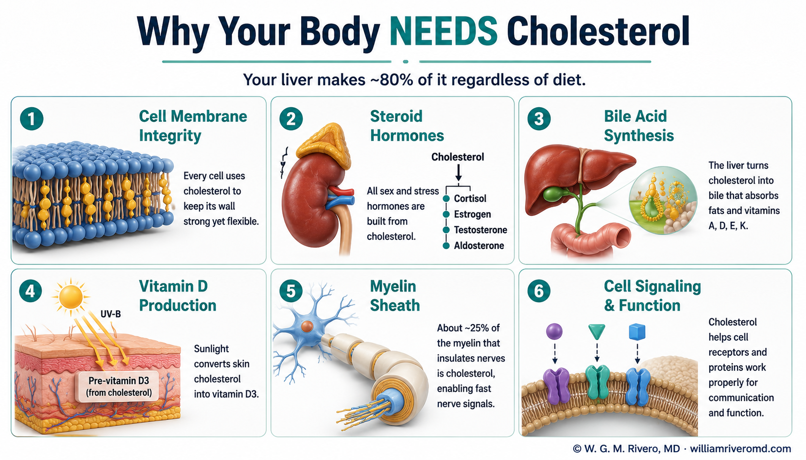
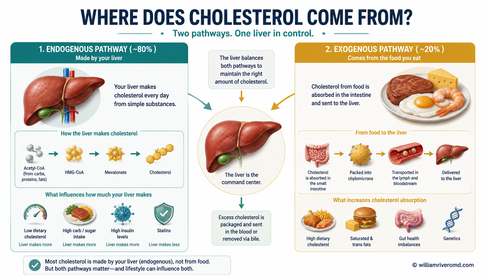
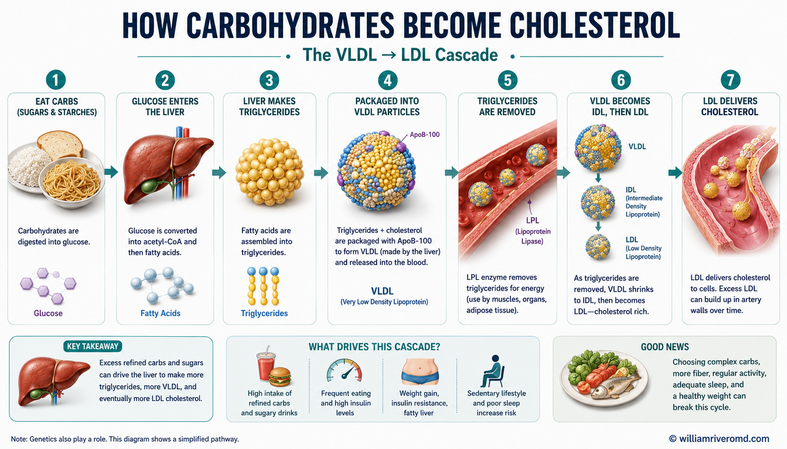
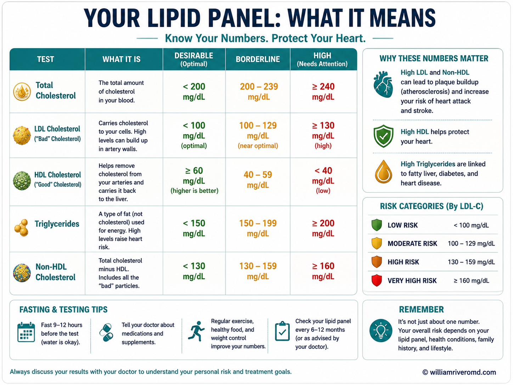
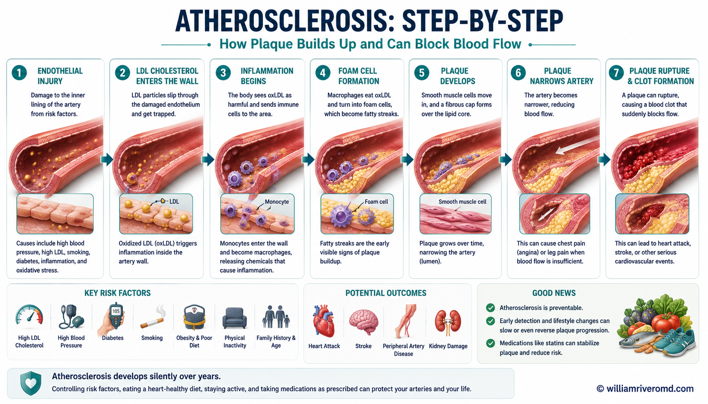
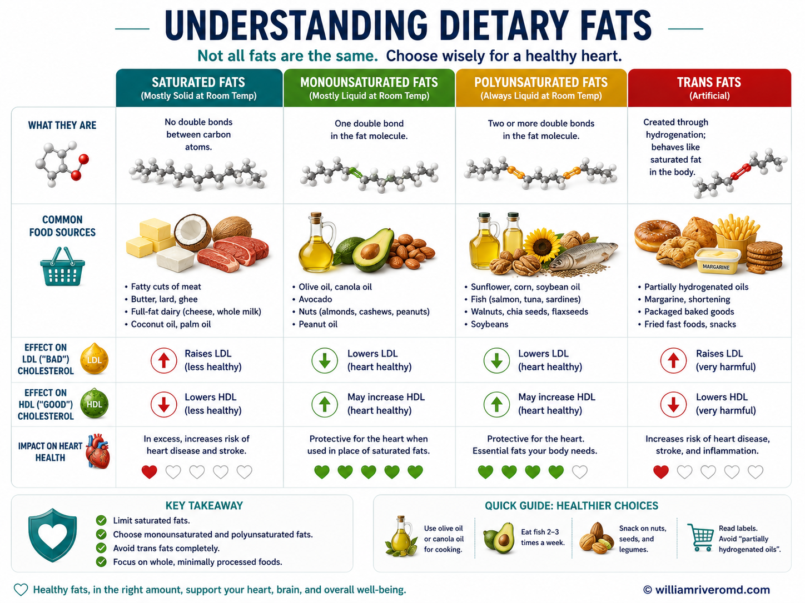
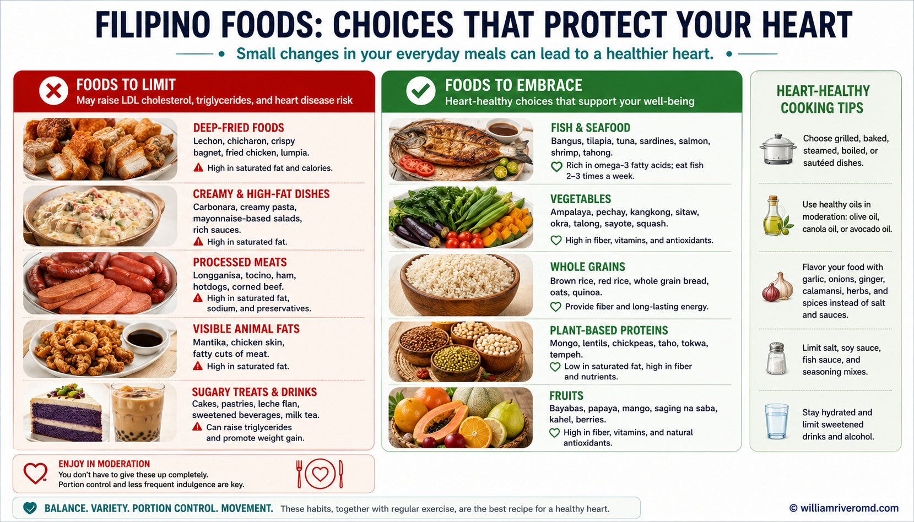
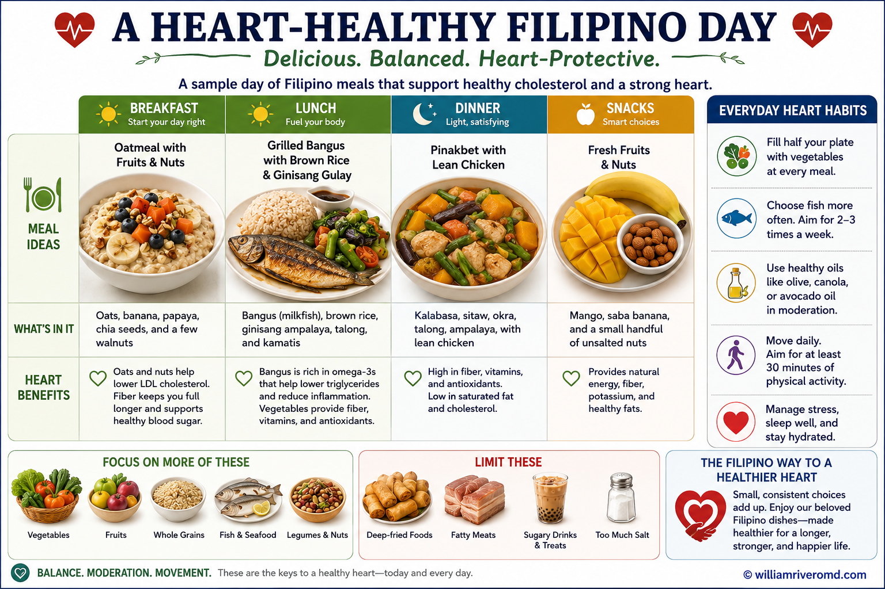

What Is Cholesterol — and Why Does Your Body Make It?Ano ang Kolesterol — at Bakit Ito Ginagawa ng Inyong Katawan?Unsa ang Kolesterol — ug Nganong Gihimo Kini sa Inyong Lawas?Ano ing Kolesterol — at Bakit Ito Ginagawa ning Inyong Katawan?
Cholesterol is not a toxin. It is a waxy, fat-like sterol that every cell in your body requires. The problem is not that you have cholesterol — it is that modern diets, excess body fat, and insulin resistance push it into configurations that damage blood vessels.Ang kolesterol ay hindi lason. Ito ay isang malagkit, katulad-ng-taba na sterol na kailangan ng bawat cell ng inyong katawan. Ang problema ay hindi ang pagkakaroon ng kolesterol — kundi ang mga modernong diyeta, labis na taba sa katawan, at insulin resistance na nagdudulot nito sa mga anyo na nakakasama sa mga daluyan ng dugo.Ang kolesterol dili hilo. Kini usa ka malapot, katulad-sa-tambok nga sterol nga gikinahanglan sa matag cell sa inyong lawas. Ang problema dili ang pagbaton og kolesterol — kondili ang modernong diyeta, sobrang taba sa lawas, ug insulin resistance nga nagdala niini sa mga porma nga makadaot sa mga ugat sa dugo.Ing kolesterol ay ali lason. Ito ay isang malagkit, katulad-ng-taba na sterol na kailangan ning bawat cell ning inyong katawan. Ing problema ay ali ing pagkakaroon ning kolesterol — kundi ing mga modernong diyeta, labis na taba king katawan, at insulin resistance na nagdudulot nito king mga anyo na nakakasama king mga daluyan ning dugo.
Structurally, cholesterol is a four-ring steroid nucleus with a single hydroxyl group and a hydrocarbon side chain. It is not soluble in water, which is why it must be packaged into protein-coated particles called lipoproteins to travel through the bloodstream.Sa istruktura, ang kolesterol ay isang apat na singsing na steroid nucleus na may isang hydroxyl group at isang hydrocarbon side chain. Ito ay hindi natutunaw sa tubig, kaya naman kailangan itong i-pakete sa mga protein-coated particles na tinatawag na lipoproteins para maglakbay sa daloy ng dugo.Sa istruktura, ang kolesterol usa ka upat ka singsing nga steroid nucleus nga adunay usa ka hydroxyl group ug usa ka hydrocarbon side chain. Kini dili matunaw sa tubig, mao nga kinahanglan itong i-pakete sa mga protein-coated particles nga gitawag og lipoproteins aron makalakaw sa daloy sa dugo.Sa istruktura, ing kolesterol ay isang apat na singsing na steroid nucleus na may isang hydroxyl group at isang hydrocarbon side chain. Ito ay ali natutunaw king tubig, kaya naman kailangan itong i-pakete king mga protein-coated particles na tinatawag na lipoproteins para maglakbay king daloy ning dugo.
The Roles Cholesterol PlaysAng mga Tungkulin ng KolesterolAng mga Papel sa KolesterolIng mga Tungkulin ning Kolesterol
Cell Membrane IntegrityIntegridad ng Cell MembraneIntegridad sa Cell MembraneIntegridad ning Cell Membrane
Cholesterol is embedded between phospholipid bilayers in every cell membrane. It regulates fluidity — keeping membranes from becoming too rigid in cold or too fluid in heat — and anchors signaling proteins in membrane "rafts."Ang kolesterol ay nakalagay sa pagitan ng mga phospholipid bilayer sa bawat cell membrane. Ito ay nagre-regulate ng fluidity — pinipigilan ang mga membrane mula sa pagiging masyadong mahirap sa malamig o masyadong likido sa init — at nagpa-anchor ng mga signaling protein sa mga membrane "rafts."Ang kolesterol nakabutang tali sa mga phospholipid bilayer sa matag cell membrane. Kini nagregulate sa fluidity — nagpugong sa mga membrane gikan sa pagiging sobrang gahi sa lamig o sobrang likido sa init — ug nagpa-anchor sa mga signaling protein sa mga membrane "rafts."Ing kolesterol ay nakalagay king pagitan ning mga phospholipid bilayer king bawat cell membrane. Ito ay nagre-regulate ning fluidity — pinipigilan ing mga membrane mula king pagiging masyadong mahirap king malamig o masyadong likido king init — at nagpa-anchor ning mga signaling protein king mga membrane "rafts."
Steroid Hormone PrecursorPinagmulan ng Steroid HormoneTinubdan sa Steroid HormonePinagmulan ning Steroid Hormone
All steroid hormones derive from cholesterol: cortisol (stress response), aldosterone (sodium/blood pressure), estrogen and progesterone (female reproductive), and testosterone (male reproductive and anabolic).Lahat ng steroid hormones ay nagmumula sa kolesterol: cortisol (tugon sa stress), aldosterone (sodium/presyon ng dugo), estrogen at progesterone (reproduktibo ng babae), at testosterone (reproduktibo ng lalaki at anabolic).Tanan nga steroid hormones nagagikan sa kolesterol: cortisol (tubag sa stress), aldosterone (sodium/presyon sa dugo), estrogen ug progesterone (reproduktibo sa babaye), ug testosterone (reproduktibo sa lalaki ug anabolic).Lahat ning steroid hormones ay nagmumula king kolesterol: cortisol (tugon king stress), aldosterone (sodium/presyon ning dugo), estrogen at progesterone (reproduktibo ning babae), at testosterone (reproduktibo ning lalaki at anabolic).
Bile Acid SynthesisPagsasagawa ng Bile AcidPaghimo sa Bile AcidPagsasagawa ning Bile Acid
The liver converts cholesterol into bile acids — the detergents that emulsify dietary fats in the small intestine, making fat-soluble vitamins (A, D, E, K) and fatty acids absorbable. Bile acids are the body's primary route for cholesterol excretion.Ang atay ay nagko-convert ng kolesterol sa mga bile acid — ang mga determent na nag-emulsify ng mga taba sa pagkain sa maliit na bituka, na ginagawang masipsip ang mga fat-soluble vitamins (A, D, E, K) at fatty acids. Ang mga bile acid ang pangunahing paraan ng katawan para sa pagtatanggal ng kolesterol.Ang atay nagkonvert sa kolesterol ngadto sa mga bile acid — ang mga detergent nga nag-emulsify sa mga tambok sa pagkaon sa gamayng tinai, nagpasoban ang mga fat-soluble vitamins (A, D, E, K) ug fatty acids. Ang mga bile acid mao ang panguna nga agianan sa lawas alang sa pagpagawas sa kolesterol.Ing atay ay nagko-convert ning kolesterol king mga bile acid — ing mga determent na nag-emulsify ning mga taba king pagkain king maliit na bituka, na ginagawang masipsip ing mga fat-soluble vitamins (A, D, E, K) at fatty acids. Ing mga bile acid ing pangunahing paraan ning katawan para king pagtatanggal ning kolesterol.
Vitamin D ProductionProduksyon ng Vitamin DProduksyon sa Vitamin DProduksyon ning Vitamin D
7-dehydrocholesterol in skin is converted to pre-vitamin D₃ by UV-B radiation, then activated in the liver and kidneys. Without adequate cholesterol, sunlight exposure alone cannot produce sufficient vitamin D.Ang 7-dehydrocholesterol sa balat ay nako-convert sa pre-vitamin D₃ ng UV-B radiation, pagkatapos ay ina-activate sa atay at bato. Kung wala ang sapat na kolesterol, ang pagkakalantad sa araw lamang ay hindi makagawa ng sapat na vitamin D.Ang 7-dehydrocholesterol sa panit gikonvert ngadto sa pre-vitamin D₃ sa UV-B radiation, unya gi-activate sa atay ug bato. Kung walay sapat nga kolesterol, ang pagkaladlad sa adlaw lamang dili makahimo og sapat nga vitamin D.Ing 7-dehydrocholesterol king balat ay nako-convert king pre-vitamin D₃ ning UV-B radiation, pagkatapos ay ina-activate king atay at bato. Kung wala ing sapat na kolesterol, ing pagkakalantad king araw lamang ay ali makagawa ning sapat na vitamin D.
Myelin SheathMyelin SheathMyelin SheathMyelin Sheath
The brain and nervous system are especially cholesterol-rich. Myelin — the insulating sheath around nerve fibers that enables fast electrical conduction — is approximately 25% cholesterol by dry weight.Ang utak at nervous system ay lalo na mayaman sa kolesterol. Ang myelin — ang insulating sheath sa paligid ng mga nerve fibers na nagbibigay-daan sa mabilis na electrical conduction — ay humigit-kumulang 25% kolesterol ayon sa dry weight.Ang utok ug nervous system labi na dato sa kolesterol. Ang myelin — ang insulating sheath libot sa mga nerve fibers nga nagtugot sa paspas nga electrical conduction — mga 25% kolesterol base sa dry weight.Ing utak at nervous system ay lalo na mayaman king kolesterol. Ing myelin — ing insulating sheath king paligid ning mga nerve fibers na nagbibigay-daan king mabilis na electrical conduction — ay humigit-kumulang 25% kolesterol ayon king dry weight.
Lipid Digestion SupportTulong sa Pagtunaw ng LipidSuporta sa Pagtunaw sa LipidTulong king Pagtunaw ning Lipid
Beyond bile acids, cholesterol forms mixed micelles with bile salts that solubilize dietary lipids, facilitating their absorption through intestinal enterocytes and onward transport.Bukod sa mga bile acid, ang kolesterol ay nagbubuo ng mga mixed micelle kasama ang mga bile salt na nagpapalusaw ng mga dietary lipid, na nagpapadali ng kanilang pagsipsip sa pamamagitan ng intestinal enterocytes at patuloy na transportasyon.Labaw pa sa mga bile acid, ang kolesterol nagporma og mga mixed micelle uban sa mga bile salt nga nagpalulaw sa mga dietary lipid, nagpadali sa ilang pagsipsip pinaagi sa intestinal enterocytes ug padayon nga transportasyon.Bukod king mga bile acid, ing kolesterol ay nagbubuo ning mga mixed micelle kasama ing mga bile salt na nagpapalusaw ning mga dietary lipid, na nagpapadali ning kanilang pagsipsip king pamamagitan ning intestinal enterocytes at patuloy na transportasyon.
Your liver makes ~80% of your cholesterol regardless of dietAng inyong atay ay gumagawa ng ~80% ng inyong kolesterol anuman ang diyetaAng inyong atay naghimo og ~80% sa inyong kolesterol bisan unsa ang diyetaIng inyong atay ay gumagawa ning ~80% ning inyong kolesterol anuman ing diyeta
Roughly 800–1,000 mg of cholesterol is synthesized endogenously each day. Dietary cholesterol contributes the remaining 20%. This is why some people with excellent diets still have elevated cholesterol — their liver simply makes more of it, often driven by genetics, excess carbohydrates, or insulin resistance.Humigit-kumulang 800–1,000 mg ng kolesterol ang nasisynthesize ng endogenously bawat araw. Ang dietary cholesterol ang nagbibigay ng natitirang 20%. Ito ang dahilan kung bakit ang ilang tao na may mahusay na diyeta ay mayroon pa ring mataas na kolesterol — ang kanilang atay ay gumagawa pa ng higit pa, madalas na dahil sa genetics, labis na karbohidrat, o insulin resistance.Mga 800–1,000 mg nga kolesterol ang nasisynthesize sa endogenously matag adlaw. Ang dietary cholesterol naghatag sa nahabilin nga 20%. Mao kini ang hinungdan ngano nga ang pipila ka tawo nga adunay maayo nga diyeta mayroon pa usab og taas nga kolesterol — ang ilang atay nagahimo lang og labaw pa, kasagaran gipalihok sa genetics, sobrang karbohidrat, o insulin resistance.Humigit-kumulang 800–1,000 mg ning kolesterol ing nasisynthesize ning endogenously bawat araw. Ing dietary cholesterol ing nagbibigay ning natitirang 20%. Ito ing dahilan kung bakit ing ilang tao na may mahusay na diyeta ay mayroon pa ring mataas na kolesterol — ing kanilang atay ay gumagawa pa ning higit pa, madalas na dahil king genetics, labis na karbohidrat, o insulin resistance.

Where Does Cholesterol Come From?Saan Nagmumula ang Kolesterol?Diin Nagagikan ang Kolesterol?Saan Nagmumula ing Kolesterol?
Cholesterol reaches your bloodstream through two distinct routes: it is either synthesized endogenously by the liver (and to a lesser extent by other cells), or it is absorbed from food and delivered via the gut.Ang kolesterol ay umaabot sa inyong daluyan ng dugo sa pamamagitan ng dalawang natatanging ruta: ito ay alinman nasisynthesize ng endogenously ng atay (at sa mas mababang antas ng ibang mga cell), o ito ay nasisipsip mula sa pagkain at naihahatid sa pamamagitan ng bituka.Ang kolesterol miabot sa inyong dugo pinaagi sa duha ka nailahing agianan: kini nasisynthesize sa endogenously sa atay (ug sa mas kaunting sukod sa ubang mga cell), o kini nasipsip gikan sa pagkaon ug gihatod pinaagi sa tinai.Ing kolesterol ay umaabot king inyong daluyan ning dugo king pamamagitan ning dalawang natatanging ruta: ito ay alinman nasisynthesize ning endogenously ning atay (at king mas mababang antas ning ibang mga cell), o ito ay nasisipsip mula king pagkain at naihahatid king pamamagitan ning bituka.
The Endogenous Pathway — HMG-CoA ReductaseAng Endogenous Pathway — HMG-CoA ReductaseAng Endogenous Pathway — HMG-CoA ReductaseIng Endogenous Pathway — HMG-CoA Reductase
The starting material for all cholesterol synthesis is acetyl-CoA — the same two-carbon unit produced from glucose, fatty acids, and amino acid breakdown. The mevalonate pathway converts acetyl-CoA into cholesterol through more than 20 enzymatic steps. The critical, rate-limiting step is the conversion of HMG-CoA (3-hydroxy-3-methylglutaryl-CoA) to mevalonate, catalyzed by HMG-CoA reductase.Ang panimulang materyal para sa lahat ng cholesterol synthesis ay acetyl-CoA — ang parehong two-carbon unit na ginagawa mula sa glucose, fatty acids, at amino acid breakdown. Ang mevalonate pathway ay nagko-convert ng acetyl-CoA sa kolesterol sa pamamagitan ng mahigit 20 enzymatic steps. Ang kritikal, rate-limiting step ay ang conversion ng HMG-CoA (3-hydroxy-3-methylglutaryl-CoA) sa mevalonate, na catalyzed ng HMG-CoA reductase.Ang panimulang materyal alang sa tanan nga cholesterol synthesis mao ang acetyl-CoA — ang mao nga two-carbon unit nga gihimo gikan sa glucose, fatty acids, ug amino acid breakdown. Ang mevalonate pathway nagkonvert sa acetyl-CoA ngadto sa kolesterol pinaagi sa labaw sa 20 enzymatic steps. Ang kritikal, rate-limiting step mao ang conversion sa HMG-CoA (3-hydroxy-3-methylglutaryl-CoA) ngadto sa mevalonate, nga catalyzed sa HMG-CoA reductase.Ing panimulang materyal para king lahat ning cholesterol synthesis ay acetyl-CoA — ing parehong two-carbon unit na ginagawa mula king glucose, fatty acids, at amino acid breakdown. Ing mevalonate pathway ay nagko-convert ning acetyl-CoA king kolesterol king pamamagitan ning mahigit 20 enzymatic steps. Ing kritikal, rate-limiting step ay ing conversion ning HMG-CoA (3-hydroxy-3-methylglutaryl-CoA) king mevalonate, na catalyzed ning HMG-CoA reductase.
Why statins work — and why they cannot eliminate cholesterolBakit Gumagana ang mga Statin — at Bakit Hindi Nila Maaalis ang KolesterolNganong Nagtrabaho ang mga Statin — ug Nganong Dili Nila Mapapas ang KolesterolBakit Gumagana ing mga Statin — at Bakit Hindi Nila Maaalis ing Kolesterol
Statins competitively inhibit HMG-CoA reductase, reducing hepatic cholesterol synthesis. The liver responds by upregulating LDL receptors on its surface to pull more LDL-cholesterol from the bloodstream — the primary mechanism by which statins lower circulating LDL. However, because cholesterol synthesis is essential for cell function, no drug completely abolishes it.Ang mga statin ay competitively nag-iinhibit ng HMG-CoA reductase, na nagbabawas ng hepatic cholesterol synthesis. Ang atay ay tumutugon sa pamamagitan ng pag-upregulate ng mga LDL receptor sa ibabaw nito para humila ng mas maraming LDL-cholesterol mula sa daluyan ng dugo — ang pangunahing mekanismo kung saan nagpapababa ng circulating LDL ang mga statin. Gayunpaman, dahil ang cholesterol synthesis ay mahalaga para sa paggana ng cell, walang gamot ang ganap na nag-aalis nito.Ang mga statin competitively nag-inhibit sa HMG-CoA reductase, nagpababa sa hepatic cholesterol synthesis. Ang atay nagtubag pinaagi sa pag-upregulate sa mga LDL receptor sa iyang ibabaw aron makahila og labaw pa nga LDL-cholesterol gikan sa dugo — ang panguna nga mekanismo diin ang mga statin nagpapaubos sa circulating LDL. Apan, tungod kay ang cholesterol synthesis mahinungdanon alang sa paggana sa cell, walay tambal ang hingpit nga nagtangtang niini.Ing mga statin ay competitively nag-iinhibit ning HMG-CoA reductase, na nagbabawas ning hepatic cholesterol synthesis. Ing atay ay tumutugon king pamamagitan ning pag-upregulate ning mga LDL receptor king ibabaw nito para humila ning mas maraming LDL-cholesterol mula king daluyan ning dugo — ing pangunahing mekanismo kung saan nagpapababa ning circulating LDL ing mga statin. Gayunpaman, dahil ing cholesterol synthesis ay mahalaga para king paggana ning cell, walang gamot ing ganap na nag-aalis nito.
The mevalonate pathway also produces coenzyme Q10 (ubiquinone), dolichol (glycoprotein synthesis), and isoprenoids — which explains why some patients on high-dose statins experience muscle symptoms: CoQ10 depletion in skeletal muscle mitochondria.Ang mevalonate pathway ay gumagawa rin ng coenzyme Q10 (ubiquinone), dolichol (glycoprotein synthesis), at isoprenoids — na nagpapaliwanag kung bakit ang ilang pasyente na nasa mataas na dosis na statin ay nakakaranas ng mga sintomas sa kalamnan: CoQ10 depletion sa skeletal muscle mitochondria.Ang mevalonate pathway nagahimo usab og coenzyme Q10 (ubiquinone), dolichol (glycoprotein synthesis), ug isoprenoids — nagpasabot kung nganong ang pipila ka pasyente sa taas nga dosis nga statin nakasinati og mga sintomas sa kaunoran: CoQ10 depletion sa skeletal muscle mitochondria.Ing mevalonate pathway ay gumagawa rin ning coenzyme Q10 (ubiquinone), dolichol (glycoprotein synthesis), at isoprenoids — na nagpapaliwanag kung bakit ing ilang pasyente na nasa mataas na dosis na statin ay nakakaranas ning mga sintomas king kalamnan: CoQ10 depletion king skeletal muscle mitochondria.
The Exogenous Pathway — ChylomicronsAng Exogenous Pathway — ChylomicronsAng Exogenous Pathway — ChylomicronsIng Exogenous Pathway — Chylomicrons
Dietary cholesterol and triglycerides (from fats and oils) are digested in the small intestine by pancreatic lipase and bile salts. Intestinal enterocytes reassemble the absorbed components and package them into chylomicrons — large, triglyceride-rich lipoproteins coated with apolipoprotein B-48.Ang dietary cholesterol at triglycerides (mula sa mga taba at langis) ay tinutunaw sa maliit na bituka ng pancreatic lipase at bile salts. Ang intestinal enterocytes ay nagpupu-ulit ng mga nasipsip na sangkap at nagpapakete ng mga ito sa mga chylomicron — malalaki, triglyceride-rich lipoproteins na natatakpan ng apolipoprotein B-48.Ang dietary cholesterol ug triglycerides (gikan sa mga tambok ug langis) tinutunaw sa gamayng tinai sa pancreatic lipase ug bile salts. Ang intestinal enterocytes nagtipon pag-usab sa mga nasipsip nga sangkap ug nagpakete niini ngadto sa mga chylomicron — dagko, triglyceride-rich lipoproteins nga gitabonan sa apolipoprotein B-48.Ing dietary cholesterol at triglycerides (mula king mga taba at langis) ay tinutunaw king maliit na bituka ning pancreatic lipase at bile salts. Ing intestinal enterocytes ay nagpupu-ulit ning mga nasipsip na sangkap at nagpapakete ning mga ito king mga chylomicron — malalaki, triglyceride-rich lipoproteins na natatakpan ning apolipoprotein B-48.
Chylomicrons enter the lymphatic system (not the portal vein directly) and drain into the bloodstream at the thoracic duct. Peripheral tissues extract triglycerides via lipoprotein lipase (LPL), shrinking the chylomicron into a chylomicron remnant enriched in cholesterol esters, which is then cleared by the liver via apolipoprotein E receptors.Ang mga chylomicron ay pumapasok sa lymphatic system (hindi direkta sa portal vein) at dumadalo sa daluyan ng dugo sa thoracic duct. Ang mga peripheral tissue ay kumukuha ng triglycerides sa pamamagitan ng lipoprotein lipase (LPL), pinipigilan ang chylomicron sa isang chylomicron remnant na mayaman sa cholesterol esters, na pagkatapos ay nilinisan ng atay sa pamamagitan ng apolipoprotein E receptors.Ang mga chylomicron misulod sa lymphatic system (dili direkta sa portal vein) ug miagos ngadto sa dugo sa thoracic duct. Ang mga peripheral tissue nagkuha og triglycerides pinaagi sa lipoprotein lipase (LPL), nagpahinay sa chylomicron ngadto sa usa ka chylomicron remnant nga dato sa cholesterol esters, nga unya gilimpyohan sa atay pinaagi sa apolipoprotein E receptors.Ing mga chylomicron ay pumapasok king lymphatic system (ali direkta king portal vein) at dumadalo king daluyan ning dugo king thoracic duct. Ing mga peripheral tissue ay kumukuha ning triglycerides king pamamagitan ning lipoprotein lipase (LPL), pinipigilan ing chylomicron king isang chylomicron remnant na mayaman king cholesterol esters, na pagkatapos ay nilinisan ning atay king pamamagitan ning apolipoprotein E receptors.

How Carbohydrates Become Cholesterol and FatPaano Nagiging Kolesterol at Taba ang mga KarbohidratUnsaon Pagkahimong Kolesterol ug Tambok ang mga KarbohidratPaano Nagiging Kolesterol at Taba ing mga Karbohidrat
"I barely eat fat but my cholesterol and triglycerides are high." This is one of the most common — and most frustrating — things patients say. The answer lies in de novo lipogenesis: the liver's ability to convert excess carbohydrates into fat and, ultimately, into circulating lipoproteins."Halos wala akong kinakain na taba ngunit ang aking kolesterol at triglycerides ay mataas." Ito ay isa sa mga pinakakaraniwang — at pinakakainis — na bagay na sinasabi ng mga pasyente. Ang sagot ay nasa de novo lipogenesis: ang kakayahan ng atay na mag-convert ng labis na karbohidrat sa taba at, sa huli, sa mga circulating lipoproteins."Halos wala akong gikaon nga tambok apan ang akong kolesterol ug triglycerides taas." Kini usa sa mga labing komon — ug labing nakairita — nga mga butang nga gisulti sa mga pasyente. Ang tubag anaa sa de novo lipogenesis: ang kakayahan sa atay nga magkonvert sa sobrang karbohidrat ngadto sa tambok ug, sa katapusan, ngadto sa mga circulating lipoproteins."Halos wala akong kinakain na taba ngunit ing aking kolesterol at triglycerides ay mataas." Ito ay isa king mga pinakakaraniwang — at pinakakainis — na bagay na sinasabi ning mga pasyente. Ing sagot ay nasa de novo lipogenesis: ing kakayahan ning atay na mag-convert ning labis na karbohidrat king taba at, king huli, king mga circulating lipoproteins.
Step 1 — Glucose to Acetyl-CoAHakbang 1 — Glucose sa Acetyl-CoALakang 1 — Glucose ngadto sa Acetyl-CoAHakbang 1 — Glucose king Acetyl-CoA
When you eat carbohydrates, glucose enters cells and undergoes glycolysis, producing pyruvate. Pyruvate is transported into mitochondria and converted to acetyl-CoA by the pyruvate dehydrogenase complex. Under normal energy conditions, acetyl-CoA enters the TCA cycle to generate ATP. When energy supply exceeds demand — as happens after a carbohydrate-heavy meal — excess acetyl-CoA is exported from mitochondria into the cytoplasm as citrate and converted back to acetyl-CoA for fat synthesis.Kapag kumain kayo ng mga karbohidrat, ang glucose ay pumapasok sa mga cell at sumasailalim sa glycolysis, na gumagawa ng pyruvate. Ang pyruvate ay dinadala sa mitochondria at niko-convert sa acetyl-CoA ng pyruvate dehydrogenase complex. Sa ilalim ng normal na kondisyon ng enerhiya, ang acetyl-CoA ay pumapasok sa TCA cycle para makabuo ng ATP. Kapag ang supply ng enerhiya ay lumampas sa demand — tulad ng nangyayari pagkatapos ng isang karbohidrat-mabigat na kain — ang labis na acetyl-CoA ay na-export mula sa mitochondria papunta sa cytoplasm bilang citrate at niko-convert pabalik sa acetyl-CoA para sa fat synthesis.Sa dihang mokaon kamo og mga karbohidrat, ang glucose misulod sa mga cell ug milabay sa glycolysis, nagmugna og pyruvate. Ang pyruvate gidala ngadto sa mitochondria ug gikonvert ngadto sa acetyl-CoA sa pyruvate dehydrogenase complex. Sa ilalim sa normal nga kondisyon sa enerhiya, ang acetyl-CoA misulod sa TCA cycle aron makamugna og ATP. Sa dihang ang suplay sa enerhiya milabaw sa demand — ingon sa mahitabo human sa usa ka karbohidrat-bug-at nga pagkaon — ang sobrang acetyl-CoA gi-export gikan sa mitochondria ngadto sa cytoplasm ingon nga citrate ug gikonvert pag-usab ngadto sa acetyl-CoA alang sa fat synthesis.Kapag kumain kayo ning mga karbohidrat, ing glucose ay pumapasok king mga cell at sumasailalim king glycolysis, na gumagawa ning pyruvate. Ing pyruvate ay dinadala king mitochondria at niko-convert king acetyl-CoA ning pyruvate dehydrogenase complex. Sa ilalim ning normal na kondisyon ning enerhiya, ing acetyl-CoA ay pumapasok king TCA cycle para makabuo ning ATP. Kapag ing supply ning enerhiya ay lumampas king demand — tulad ning nangyayari pagkatapos ning isang karbohidrat-mabigat na kain — ing labis na acetyl-CoA ay na-export mula king mitochondria papunta king cytoplasm bilang citrate at niko-convert pabalik king acetyl-CoA para king fat synthesis.
Step 2 — De Novo Lipogenesis (DNL)Hakbang 2 — De Novo Lipogenesis (DNL)Lakang 2 — De Novo Lipogenesis (DNL)Hakbang 2 — De Novo Lipogenesis (DNL)
In the liver, excess acetyl-CoA is converted to malonyl-CoA by acetyl-CoA carboxylase, then elongated by fatty acid synthase (FAS) into palmitate — a 16-carbon saturated fatty acid. Palmitate is the primary product of DNL. It can be elongated and desaturated into other fatty acids, or esterified with glycerol to form triglycerides.Sa atay, ang labis na acetyl-CoA ay niko-convert sa malonyl-CoA ng acetyl-CoA carboxylase, pagkatapos ay pinahaba ng fatty acid synthase (FAS) sa palmitate — isang 16-carbon saturated fatty acid. Ang palmitate ang pangunahing produkto ng DNL. Maaari itong pahabain at i-desaturate sa iba pang fatty acids, o esterified kasama ang glycerol para makabuo ng triglycerides.Sa atay, ang sobrang acetyl-CoA gikonvert ngadto sa malonyl-CoA sa acetyl-CoA carboxylase, unya gipadugay sa fatty acid synthase (FAS) ngadto sa palmitate — usa ka 16-carbon saturated fatty acid. Ang palmitate mao ang panguna nga produkto sa DNL. Kini mahimong padugayon ug i-desaturate ngadto sa ubang fatty acids, o i-esterify uban ang glycerol aron makahimo og triglycerides.Sa atay, ing labis na acetyl-CoA ay niko-convert king malonyl-CoA ning acetyl-CoA carboxylase, pagkatapos ay pinahaba ning fatty acid synthase (FAS) king palmitate — isang 16-carbon saturated fatty acid. Ing palmitate ing pangunahing produkto ning DNL. Maaari itong pahabain at i-desaturate king iba pang fatty acids, o esterified kasama ing glycerol para makabuo ning triglycerides.
Fructose is a particularly potent driver of de novo lipogenesisAng Fructose ay Isang Partikular na Malakas na Driver ng De Novo LipogenesisAng Fructose Partikular nga Kusgan nga Driver sa De Novo LipogenesisIng Fructose ay Isang Partikular na Malakas na Driver ning De Novo Lipogenesis
Unlike glucose, fructose bypasses the rate-limiting enzyme phosphofructokinase-1 (PFK-1). It enters the glycolytic pathway below this checkpoint, flooding the liver with acetyl-CoA substrate with no "traffic control." This makes sugar-sweetened beverages, fruit juices, and high-fructose corn syrup unusually effective at raising triglycerides and driving hepatic fat accumulation — independent of total caloric intake. A can of regular soda contains ~25 g of fructose; a glass of commercial orange juice contains ~12 g.Hindi katulad ng glucose, ang fructose ay nakalagpas sa rate-limiting enzyme phosphofructokinase-1 (PFK-1). Ito ay pumapasok sa glycolytic pathway sa ibaba ng checkpoint na ito, na binabaha ang atay ng acetyl-CoA substrate na walang "traffic control." Ginagawa nitong hindi karaniwang epektibo ang mga inuming may asukal, fruit juices, at high-fructose corn syrup sa pagpapataas ng triglycerides at pagmamaneho ng hepatic fat accumulation — anuman ang kabuuang caloric intake. Ang isang lata ng regular na soda ay naglalaman ng ~25 g ng fructose; ang isang baso ng commercial orange juice ay naglalaman ng ~12 g.Dili sama sa glucose, ang fructose nalabyan ang rate-limiting enzyme phosphofructokinase-1 (PFK-1). Misulod kini sa glycolytic pathway ubos sa checkpoint nga kini, nagbaha sa atay sa acetyl-CoA substrate nga walay "traffic control." Kini nagpadako sa mga inumon nga adunay asukal, fruit juices, ug high-fructose corn syrup nga dili kasagarang epektibo sa pagpataas sa triglycerides ug pagpalihok sa hepatic fat accumulation — bisan unsa ang kabuuang caloric intake. Ang usa ka lata sa regular nga soda adunay ~25 g nga fructose; ang usa ka baso sa commercial orange juice adunay ~12 g.Hindi katulad ning glucose, ing fructose ay nakalagpas king rate-limiting enzyme phosphofructokinase-1 (PFK-1). Ito ay pumapasok king glycolytic pathway king ibaba ning checkpoint na ito, na binabaha ing atay ning acetyl-CoA substrate na walang "traffic control." Ginagawa nitong ali karaniwang epektibo ing mga inuming may asukal, fruit juices, at high-fructose corn syrup king pagpapataas ning triglycerides at pagmamaneho ning hepatic fat accumulation — anuman ing kabuuang caloric intake. Ing isang lata ning regular na soda ay naglalaman ning ~25 g ning fructose; ing isang baso ning commercial orange juice ay naglalaman ning ~12 g.
Step 3 — VLDL Assembly and SecretionHakbang 3 — Pagtitipon at Paglalabas ng VLDLLakang 3 — Pagtipon ug Paggawas sa VLDLHakbang 3 — Pagtitipon at Paglalabas ning VLDL
The liver packages hepatic triglycerides together with cholesterol, phospholipids, and apolipoprotein B-100 into very low-density lipoprotein (VLDL). VLDL is the liver's vehicle for exporting fat to peripheral tissues. The more triglycerides the liver accumulates — whether from excess dietary fat, excess dietary carbohydrate via DNL, or alcohol — the more VLDL it secretes into the bloodstream.Ang atay ay nagpapakete ng mga hepatic triglycerides kasama ang kolesterol, phospholipids, at apolipoprotein B-100 sa very low-density lipoprotein (VLDL). Ang VLDL ang sasakyan ng atay para mag-export ng taba sa mga peripheral tissue. Habang mas maraming triglycerides ang naipon ng atay — mula sa labis na dietary fat, labis na dietary carbohydrate sa pamamagitan ng DNL, o alkohol — mas maraming VLDL ang inilalabas nito sa daluyan ng dugo.Ang atay nagpakete sa mga hepatic triglycerides uban ang kolesterol, phospholipids, ug apolipoprotein B-100 ngadto sa very low-density lipoprotein (VLDL). Ang VLDL mao ang sakyanan sa atay alang sa pag-export sa tambok ngadto sa mga peripheral tissue. Labaw pa nga triglycerides ang natipon sa atay — gikan sa sobrang dietary fat, sobrang dietary carbohydrate pinaagi sa DNL, o alkohol — labaw pa nga VLDL ang gipalawas niini ngadto sa dugo.Ing atay ay nagpapakete ning mga hepatic triglycerides kasama ing kolesterol, phospholipids, at apolipoprotein B-100 king very low-density lipoprotein (VLDL). Ing VLDL ing sasakyan ning atay para mag-export ning taba king mga peripheral tissue. Habang mas maraming triglycerides ing naipon ning atay — mula king labis na dietary fat, labis na dietary carbohydrate king pamamagitan ning DNL, o alkohol — mas maraming VLDL ing inilalabas nito king daluyan ning dugo.
Step 4 — The VLDL → IDL → LDL CascadeHakbang 4 — Ang VLDL → IDL → LDL CascadeLakang 4 — Ang VLDL → IDL → LDL CascadeHakbang 4 — Ing VLDL → IDL → LDL Cascade
Once in the circulation, VLDL encounters lipoprotein lipase (LPL) on the surface of muscle and fat tissue capillaries. LPL hydrolyzes the triglyceride core, releasing fatty acids for cellular uptake. As VLDL loses triglycerides it shrinks, first into intermediate-density lipoprotein (IDL), and then — after further triglyceride removal and exchange of apolipoproteins — into the smaller, denser, cholesterol-enriched LDL (low-density lipoprotein).Kapag nasa sirkulasyon na, ang VLDL ay nakatagpo ng lipoprotein lipase (LPL) sa ibabaw ng mga capillary ng kalamnan at taba. Ang LPL ay nag-hydrolyze sa triglyceride core, naglalabas ng mga fatty acid para sa cellular uptake. Habang nawawalan ng triglycerides ang VLDL ito ay lumiliit, una sa intermediate-density lipoprotein (IDL), at pagkatapos — pagkatapos ng karagdagang triglyceride removal at pagpapalit ng mga apolipoprotein — sa mas maliit, mas siksik, cholesterol-enriched na LDL (low-density lipoprotein).Sa dihang anaa na sa sirkulasyon, ang VLDL nasugatan sa lipoprotein lipase (LPL) sa ibabaw sa mga capillary sa kaunoran ug tambok. Ang LPL nag-hydrolyze sa triglyceride core, nagpagawas sa mga fatty acid alang sa cellular uptake. Sa dihang nawagtangan og triglycerides ang VLDL kini nagkagamay, una ngadto sa intermediate-density lipoprotein (IDL), ug unya — human sa dugang pa nga triglyceride removal ug pagbayloay sa mga apolipoprotein — ngadto sa gamay, mas denseha, cholesterol-enriched nga LDL (low-density lipoprotein).Kapag nasa sirkulasyon na, ing VLDL ay nakatagpo ning lipoprotein lipase (LPL) king ibabaw ning mga capillary ning kalamnan at taba. Ing LPL ay nag-hydrolyze king triglyceride core, naglalabas ning mga fatty acid para king cellular uptake. Habang nawawalan ning triglycerides ing VLDL ito ay lumiliit, una king intermediate-density lipoprotein (IDL), at pagkatapos — pagkatapos ning karagdagang triglyceride removal at pagpapalit ning mga apolipoprotein — king mas maliit, mas siksik, cholesterol-enriched na LDL (low-density lipoprotein).
Why This Matters ClinicallyBakit Ito Mahalaga sa KlinikalNganong Importante Kini sa KlinikalBakit Ito Mahalaga king Klinikal
The VLDL → LDL cascade means that anything which increases hepatic triglyceride production will ultimately raise LDL particle count. A diet high in refined carbohydrates and sugar — even with very low fat intake — can therefore worsen both triglycerides and LDL. This is why the TG/HDL-C ratio (in mg/dL) is a useful surrogate for atherogenic dyslipidemia and insulin resistance: when TG is high and HDL is low, the liver is in an overproduction state generating many small, dense LDL particles — the most atherogenic form.Ang VLDL → LDL cascade ay nangangahulugang ang anumang nagpapataas ng hepatic triglyceride production ay sa huli ay magpapataas ng bilang ng LDL particle. Ang isang diyeta na mayaman sa refined carbohydrates at asukal — kahit sa napakababang intake ng taba — ay maaaring magpalala ng parehong triglycerides at LDL. Kaya naman ang TG/HDL-C ratio (sa mg/dL) ay isang kapaki-pakinabang na surrogates para sa atherogenic dyslipidemia at insulin resistance: kapag mataas ang TG at mababa ang HDL, ang atay ay nasa estado ng overproduction na gumagawa ng maraming maliit, siksik na LDL particles — ang pinaka-atherogenic na anyo.Ang VLDL → LDL cascade nagpasabot nga bisan unsa ang nagpataas sa hepatic triglyceride production sa katapusan magpataas sa ihap sa LDL particle. Ang usa ka diyeta nga dato sa refined carbohydrates ug asukal — bisan sa napakagamay nga intake sa tambok — mahimong magpalala sa parehong triglycerides ug LDL. Mao kini ang hinungdan ngano nga ang TG/HDL-C ratio (sa mg/dL) usa ka mapuslanon nga surrogate alang sa atherogenic dyslipidemia ug insulin resistance: sa dihang taas ang TG ug ubos ang HDL, ang atay nasa estado sa overproduction nagmugna og daghang gagmay, dense nga LDL particles — ang labing atherogenic nga porma.Ing VLDL → LDL cascade ay nangangahulugang ing anumang nagpapataas ning hepatic triglyceride production ay king huli ay magpapataas ning bilang ning LDL particle. Ing isang diyeta na mayaman king refined carbohydrates at asukal — kahit king napakababang intake ning taba — ay maaaring magpalala ning parehong triglycerides at LDL. Kaya naman ing TG/HDL-C ratio (sa mg/dL) ay isang kapaki-pakinabang na surrogates para king atherogenic dyslipidemia at insulin resistance: kapag mataas ing TG at mababa ing HDL, ing atay ay nasa estado ning overproduction na gumagawa ning maraming maliit, siksik na LDL particles — ing pinaka-atherogenic na anyo.

Reading Your Lipid PanelPagbabasa ng Inyong Lipid PanelPagbasa sa Inyong Lipid PanelPagbabasa ning Inyong Lipid Panel
A standard fasting lipid panel measures four values. Each reflects a different aspect of your cardiovascular risk. Understanding what each means — not just whether it is "high" or "low" — helps you and your physician make better decisions.Ang isang standard fasting lipid panel ay nagsusukat ng apat na halaga. Ang bawat isa ay sumasalamin sa ibang aspeto ng inyong cardiovascular risk. Ang pag-unawa sa kahulugan ng bawat isa — hindi lamang kung ito ay "mataas" o "mababa" — tumutulong sa inyo at sa inyong doktor na gumawa ng mas mabuting mga desisyon.Ang usa ka standard fasting lipid panel nagsukat sa upat ka kantidad. Ang matag usa nagpakita sa lain-laing aspeto sa inyong cardiovascular risk. Ang pag-ila sa kahulogan sa matag usa — dili lamang kung kini "taas" o "ubos" — nagtabang kaninyo ug sa inyong doktor sa paghimog mas maayong mga desisyon.Ing isang standard fasting lipid panel ay nagsusukat ning apat na halaga. Ing bawat isa ay sumasalamin king ibang aspeto ning inyong cardiovascular risk. Ing pag-unawa king kahulugan ning bawat isa — ali lamang kung ito ay "mataas" o "mababa" — tumutulong king inyo at king inyong doktor na gumawa ning mas mabuting mga desisyon.
| MeasurementSukatSukatSukat | What It RepresentsAno ang Kinakatawan NitoUnsa ang Iyang GirepresentaAno ing Kinakatawan Nito | DesirableKanais-naisGikinahanglanKanais-nais | BorderlineBorderlineBorderlineBorderline | High / ConcerningMataas / Nakaka-alalahaninTaas / NakabalakaMataas / Nakaka-alalahanin |
|---|---|---|---|---|
| Total Cholesterol (TC)Kabuuang Kolesterol (TC)Kinatibuk-ang Kolesterol (TC)Kabuuang Kolesterol (TC) | Sum of all cholesterol in all lipoprotein particles. A screening value — must be interpreted alongside LDL and HDL.Kabuuan ng lahat ng kolesterol sa lahat ng lipoprotein particles. Isang screening value — dapat bigyang-kahulugan kasabay ng LDL at HDL.Suma sa tanan nga kolesterol sa tanan nga lipoprotein particles. Usa ka screening value — kinahanglan interpretahon uban ang LDL ug HDL.Kabuuan ning lahat ning kolesterol king lahat ning lipoprotein particles. Isang screening value — dapat bigyang-kahulugan kasabay ning LDL at HDL. | <200 mg/dL | 200–239 | ≥240 |
| LDL-Cholesterol (LDL-C)LDL-Kolesterol (LDL-C)LDL-Kolesterol (LDL-C)LDL-Kolesterol (LDL-C) | Cholesterol carried in LDL particles. The primary atherogenic driver — the main target of lipid-lowering therapy.Kolesterol na dala ng mga LDL particle. Ang pangunahing atherogenic driver — ang pangunahing target ng lipid-lowering therapy.Kolesterol nga gidala sa mga LDL particle. Ang panguna nga atherogenic driver — ang panguna nga target sa lipid-lowering therapy.Kolesterol na dala ning mga LDL particle. Ing pangunahing atherogenic driver — ing pangunahing target ning lipid-lowering therapy. | <100 mg/dL | 100–129 | ≥130 (high risk: ≥70) |
| HDL-Cholesterol (HDL-C)HDL-Kolesterol (HDL-C)HDL-Kolesterol (HDL-C)HDL-Kolesterol (HDL-C) | Cholesterol in HDL particles. Higher is generally protective. Low HDL is an independent cardiovascular risk factor.Kolesterol sa mga HDL particle. Mas mataas ay karaniwang nagpoprotekta. Ang mababang HDL ay isang independiyenteng cardiovascular risk factor.Kolesterol sa mga HDL particle. Mas taas kasagaran nagpanalipod. Ang ubos nga HDL usa ka independiyente nga cardiovascular risk factor.Kolesterol king mga HDL particle. Mas mataas ay karaniwang nagpoprotekta. Ing mababang HDL ay isang independiyenteng cardiovascular risk factor. | ≥60 mg/dL | 40–59 (M) · 50–59 (F) | <40 (M) · <50 (F) |
| Triglycerides (TG)Triglycerides (TG)Triglycerides (TG)Triglycerides (TG) | Circulating fat in VLDL and chylomicrons. Reflects dietary carb and fat intake, alcohol use, and insulin resistance.Taba na umaandar sa VLDL at chylomicrons. Sumasalamin sa dietary carb at fat intake, paggamit ng alkohol, at insulin resistance.Tambok nga nagaligid sa VLDL ug chylomicrons. Nagpakita sa dietary carb ug fat intake, paggamit sa alkohol, ug insulin resistance.Taba na umaandar king VLDL at chylomicrons. Sumasalamin king dietary carb at fat intake, paggamit ning alkohol, at insulin resistance. | <150 mg/dL | 150–199 | 200–499 · ≥500 = pancreatitis risk |
| Non-HDL-CNon-HDL-CNon-HDL-CNon-HDL-C | TC minus HDL-C. Captures cholesterol in all atherogenic particles (LDL + VLDL + IDL + Lp(a)). Often more predictive than LDL-C alone.TC bawas HDL-C. Kinukuha ang kolesterol sa lahat ng atherogenic particles (LDL + VLDL + IDL + Lp(a)). Madalas na mas predictive kaysa sa LDL-C lamang.TC minus HDL-C. Nagkuha sa kolesterol sa tanan nga atherogenic particles (LDL + VLDL + IDL + Lp(a)). Kasagaran mas predictive kaysa sa LDL-C lamang.TC bawas HDL-C. Kinukuha ing kolesterol king lahat ning atherogenic particles (LDL + VLDL + IDL + Lp(a)). Madalas na mas predictive kaysa king LDL-C lamang. | <130 mg/dL | 130–159 | ≥160 |
LDL-C targets depend on your cardiovascular risk categoryAng mga target na LDL-C ay nakasalalay sa inyong kategorya ng cardiovascular riskAng mga target nga LDL-C nagdepende sa inyong kategorya sa cardiovascular riskIng mga target na LDL-C ay nakasalalay king inyong kategorya ning cardiovascular risk
The values above are general-population thresholds. If you have established heart disease, diabetes, CKD, or multiple risk factors, your LDL-C target may be significantly lower (e.g., <70 mg/dL or even <55 mg/dL for very high-risk patients). See the Dyslipidemia 2026 Guidelines guide for individualized risk stratification and treatment targets.Ang mga halaga sa itaas ay mga pangkalahatang threshold para sa populasyon. Kung mayroon kayong established heart disease, diabetes, CKD, o maraming risk factors, ang inyong target na LDL-C ay maaaring makabuluhang mas mababa (hal., <70 mg/dL o kahit <55 mg/dL para sa mga pasyenteng may napakataas na panganib). Tingnan ang gabay na Dyslipidemia 2026 Guidelines para sa individualized risk stratification at mga target ng paggamot.Ang mga kantidad sa ibabaw mga threshold alang sa kinatibuk-ang populasyon. Kung aduna kamoy established heart disease, diabetes, CKD, o daghang risk factors, ang inyong target nga LDL-C mahimong mas ubos (hal., <70 mg/dL o bisan <55 mg/dL alang sa mga pasyente nga adunay taas kaayo nga risgo). Tan-awa ang gabay nga Dyslipidemia 2026 Guidelines alang sa individualized risk stratification ug mga target sa pagtambal.Ing mga halaga king itaas ay mga pangkalahatang threshold para king populasyon. Kung mayroon kayong established heart disease, diabetes, CKD, o maraming risk factors, ing inyong target na LDL-C ay maaaring makabuluhang mas mababa (hal., <70 mg/dL o kahit <55 mg/dL para king mga pasyenteng may napakataas na panganib). Tingnan ing gabay na Dyslipidemia 2026 Guidelines para king individualized risk stratification at mga target ning paggamot.

What Happens When Cholesterol Is ImbalancedAno ang Nangyayari Kapag Imbalanced ang KolesterolUnsa ang Mahitabo Sa Dihang Imbalanced ang KolesterolAno ing Nangyayari Kapag Imbalanced ing Kolesterol
Atherosclerosis — Step by StepAtherosclerosis — Hakbang sa HakbangAtherosclerosis — Lakang sa LakangAtherosclerosis — Hakbang king Hakbang
Atherosclerosis is not simply "fat clogging a pipe." It is a chronic inflammatory disease initiated by LDL particles and perpetuated by immune dysfunction. It begins silently in the second and third decades of life and takes decades to produce a clinical event.Ang atherosclerosis ay hindi lamang "taba na nagtatakip ng tubo." Ito ay isang talamak na nagpapasabog na sakit na inisyahan ng mga LDL particle at pinanatili ng immune dysfunction. Ito ay nagsisimulang tahimik sa ikalawa at ikatlong dekada ng buhay at tumatagal ng mga dekada bago makagawa ng klinikal na kaganapan.Ang atherosclerosis dili lamang "tambok nga nagpugong sa tubo." Kini usa ka kronikong nagsugod nga sakit nga sinugdan sa mga LDL particle ug gipabilin sa immune dysfunction. Kini nagsugod nga hilom sa ikaduhang ug ikatulo nga dekada sa kinabuhi ug nagkinahanglan og mga dekada aron makamugna og klinikal nga panghitabo.Ing atherosclerosis ay ali lamang "taba na nagtatakip ning tubo." Ito ay isang talamak na nagpapasabog na sakit na inisyahan ning mga LDL particle at pinanatili ning immune dysfunction. Ito ay nagsisimulang tahimik king ikalawa at ikatlong dekada ning buhay at tumatagal ning mga dekada bago makagawa ning klinikal na kaganapan.
Endothelial InjuryPinsala sa EndotheliumSamad sa EndotheliumPinsala king Endothelium
The inner lining of arteries (the endothelium) is damaged by high blood pressure, cigarette smoke, high blood glucose, or oxidative stress. This increases permeability and promotes the expression of adhesion molecules that recruit white blood cells.Ang panloob na lining ng mga arterya (ang endothelium) ay napinsala ng mataas na presyon ng dugo, usok ng sigarilyo, mataas na blood glucose, o oxidative stress. Pinapataas nito ang permeability at nagtataguyod ng pagpapahayag ng mga adhesion molecule na nag-rerecruit ng mga white blood cell.Ang sulod nga lining sa mga arterya (ang endothelium) nadaot sa taas nga presyon sa dugo, aso sa sigarilyo, taas nga blood glucose, o oxidative stress. Nagpataas kini sa permeability ug nagpasiugda sa pagpahayag sa mga adhesion molecule nga nag-recruit sa mga white blood cell.Ing panloob na lining ning mga arterya (ang endothelium) ay napinsala ning mataas na presyon ning dugo, usok ning sigarilyo, mataas na blood glucose, o oxidative stress. Pinapataas nito ing permeability at nagtataguyod ning pagpapahayag ning mga adhesion molecule na nag-rerecruit ning mga white blood cell.
LDL Particle Entry and OxidationPagpasok at Oxidation ng LDL ParticlePagsulod ug Oxidation sa LDL ParticlePagpasok at Oxidation ning LDL Particle
LDL particles cross the damaged endothelium and become trapped in the arterial wall. Trapped LDL is modified by reactive oxygen species into oxidized LDL (oxLDL) — a highly inflammatory molecule. Small, dense LDL particles are more susceptible to oxidation than large, buoyant LDL; this is why the LDL particle type matters, not just total LDL-C concentration.Ang mga LDL particle ay tumatawid sa napinsalang endothelium at naiipit sa dingding ng arterya. Ang naipit na LDL ay binabago ng reactive oxygen species sa oxidized LDL (oxLDL) — isang napaka-inflammatory na molekula. Ang maliliit, siksik na LDL particles ay mas madaling ma-oxidize kaysa sa malalaki, maliwanag na LDL; kaya naman mahalaga ang uri ng LDL particle, hindi lamang ang kabuuang LDL-C concentration.Ang mga LDL particle mitabok sa nadaot nga endothelium ug naibis sa dingding sa arterya. Ang naibis nga LDL gibag-o sa reactive oxygen species ngadto sa oxidized LDL (oxLDL) — usa ka labaw ka inflammatory nga molekula. Ang gagmay, dense nga LDL particles mas madaling ma-oxidize kaysa sa dagko, magaan nga LDL; mao kini ang hinungdan ngano nga mahinungdanon ang tipo sa LDL particle, dili lamang ang kinatibuk-ang LDL-C concentration.Ing mga LDL particle ay tumatawid king napinsalang endothelium at naiipit king dingding ning arterya. Ing naipit na LDL ay binabago ning reactive oxygen species king oxidized LDL (oxLDL) — isang napaka-inflammatory na molekula. Ing maliliit, siksik na LDL particles ay mas madaling ma-oxidize kaysa king malalaki, maliwanag na LDL; kaya naman mahalaga ing uri ning LDL particle, ali lamang ing kabuuang LDL-C concentration.
Foam Cell FormationPagbuo ng Foam CellPagporma sa Foam CellPagbuo ning Foam Cell
Monocytes recruited to the arterial wall differentiate into macrophages that engulf oxLDL via scavenger receptors. Unlike normal LDL uptake (which is regulated), scavenger receptor uptake is unregulated — macrophages keep ingesting oxLDL until they become engorged with cholesterol and transform into foam cells, the hallmark of early atherosclerosis.Ang mga monocyte na na-recruit sa dingding ng arterya ay nagdiferensya sa mga macrophage na lumalamon ng oxLDL sa pamamagitan ng mga scavenger receptor. Hindi tulad ng normal na LDL uptake (na regulated), ang scavenger receptor uptake ay hindi regulated — ang mga macrophage ay patuloy na kumakain ng oxLDL hanggang hindi sila mapuno ng kolesterol at ma-transform sa mga foam cell, ang tanda ng maagang atherosclerosis.Ang mga monocyte nga gi-recruit sa dingding sa arterya nagdiferensya ngadto sa mga macrophage nga naglamon sa oxLDL pinaagi sa mga scavenger receptor. Dili sama sa normal nga LDL uptake (nga regulated), ang scavenger receptor uptake wala regulated — ang mga macrophage nagpadayon sa pagkaon sa oxLDL hangtod napuno sila sa kolesterol ug naporma ngadto sa mga foam cell, ang timailhan sa sayong atherosclerosis.Ing mga monocyte na na-recruit king dingding ning arterya ay nagdiferensya king mga macrophage na lumalamon ning oxLDL king pamamagitan ning mga scavenger receptor. Hindi tulad ning normal na LDL uptake (na regulated), ing scavenger receptor uptake ay ali regulated — ing mga macrophage ay patuloy na kumakain ning oxLDL hanggang ali sila mapuno ning kolesterol at ma-transform king mga foam cell, ing tanda ning maagang atherosclerosis.
Fatty Streak → Fibrous PlaqueFatty Streak → Fibrous PlaqueFatty Streak → Fibrous PlaqueFatty Streak → Fibrous Plaque
Foam cells die and release their cholesterol content into the extracellular space, forming a necrotic lipid core. Smooth muscle cells migrate from the medial layer and deposit a fibrous cap of collagen over the core. The plaque grows progressively, narrowing the arterial lumen.Ang mga foam cell ay namamatay at naglalabas ng kanilang nilalaman ng kolesterol sa extracellular space, na nagbubuo ng necrotic lipid core. Ang mga smooth muscle cell ay lumalipat mula sa medial layer at naglalagay ng fibrous cap ng collagen sa ibabaw ng core. Ang plaque ay unti-unting lumalaki, pinipigilan ang arterial lumen.Ang mga foam cell namatay ug nagpagawas sa ilang sulod nga kolesterol ngadto sa extracellular space, nagporma og necrotic lipid core. Ang mga smooth muscle cell mibalhin gikan sa medial layer ug nagdeposito og fibrous cap sa collagen ibabaw sa core. Ang plaque nagdako progresibo, nagpahigpit sa arterial lumen.Ing mga foam cell ay namamatay at naglalabas ning kanilang nilalaman ning kolesterol king extracellular space, na nagbubuo ning necrotic lipid core. Ing mga smooth muscle cell ay lumalipat mula king medial layer at naglalagay ning fibrous cap ning collagen king ibabaw ning core. Ing plaque ay unti-unting lumalaki, pinipigilan ing arterial lumen.
Plaque Rupture → Acute Coronary Syndrome or StrokePagputok ng Plaque → Acute Coronary Syndrome o StrokePagbuto sa Plaque → Acute Coronary Syndrome o StrokePagputok ning Plaque → Acute Coronary Syndrome o Stroke
A vulnerable plaque — one with a large lipid core and thin fibrous cap — can rupture suddenly. Ruptured plaque exposes thrombogenic material that triggers immediate clot formation. This acute thrombosis can partially or completely block the vessel, causing a heart attack (if a coronary artery) or ischemic stroke (if a cerebral artery). Importantly, many ruptures occur in plaques that were not severely narrowing the vessel — making pre-event detection difficult without advanced imaging.Ang isang marupok na plaque — isa na may malaking lipid core at manipis na fibrous cap — ay maaaring maputok nang biglaan. Ang nagbukas na plaque ay naglalantad ng thrombogenic material na nagpapalitaw ng agarang pagbuo ng clot. Ang acute thrombosis na ito ay maaaring bahagya o ganap na harangan ang daluyan, na nagdudulot ng atake sa puso (kung coronary artery) o ischemic stroke (kung cerebral artery). Mahalaga, maraming pagputok ang nangyayari sa mga plaque na hindi masyadong nagpapaliit ng daluyan — na ginagawang mahirap ang pagtuklas bago ang kaganapan nang walang advanced na imaging.Ang usa ka vulnerable nga plaque — usa nga adunay dako nga lipid core ug nipis nga fibrous cap — mahimong mabuto kalit. Ang nabuto nga plaque nagbukas sa thrombogenic material nga nagpalihok sa diha-diha nga pagporma sa clot. Kining acute thrombosis mahimong bahagi o hingpit nga mapugong ang ugat, nagpahinabo og atake sa kasingkasing (kung coronary artery) o ischemic stroke (kung cerebral artery). Importante, daghang pagbuto mahitabo sa mga plaque nga wala grabe nga nagpahigpit sa ugat — nagpabudlay sa pagtuklas antes sa panghitabo nga walay advanced nga imaging.Ing isang marupok na plaque — isa na may malaking lipid core at manipis na fibrous cap — ay maaaring maputok nang biglaan. Ing nagbukas na plaque ay naglalantad ning thrombogenic material na nagpapalitaw ning agarang pagbuo ning clot. Ing acute thrombosis na ito ay maaaring bahagya o ganap na harangan ing daluyan, na nagdudulot ning atake king puso (kung coronary artery) o ischemic stroke (kung cerebral artery). Mahalaga, maraming pagputok ing nangyayari king mga plaque na ali masyadong nagpapaliit ning daluyan — na ginagawang mahirap ing pagtuklas bago ing kaganapan nang walang advanced na imaging.
High Triglycerides — Acute Pancreatitis RiskMataas na Triglycerides — Panganib ng Acute PancreatitisTaas nga Triglycerides — Risgo sa Acute PancreatitisMataas na Triglycerides — Panganib ning Acute Pancreatitis
When triglycerides exceed 500 mg/dL, the risk of acute pancreatitis increases substantially. At levels above 1,000 mg/dL, pancreatitis is common and can be life-threatening. The mechanism involves hydrolysis of triglycerides within pancreatic capillaries by pancreatic lipase, releasing toxic free fatty acids that damage acinar cells and trigger systemic inflammation. Patients with severe hypertriglyceridemia require urgent treatment (dietary fat restriction, omega-3 supplementation, fibrates, and sometimes insulin therapy to activate LPL).Kapag ang triglycerides ay lumampas sa 500 mg/dL, ang panganib ng acute pancreatitis ay malaki ang pagtaas. Sa mga antas na higit sa 1,000 mg/dL, ang pancreatitis ay karaniwan at maaaring maging peligro sa buhay. Ang mekanismo ay kinasasangkutan ng hydrolysis ng triglycerides sa loob ng pancreatic capillaries ng pancreatic lipase, naglalabas ng nakakalason na free fatty acids na nagpipinsala ng acinar cells at nagpapalitaw ng systemic inflammation. Ang mga pasyenteng may matinding hypertriglyceridemia ay nangangailangan ng agarang paggamot (dietary fat restriction, omega-3 supplementation, fibrates, at minsan insulin therapy para i-activate ang LPL).Sa dihang ang triglycerides milabaw sa 500 mg/dL, ang risgo sa acute pancreatitis nagdako kaayo. Sa mga antas labaw sa 1,000 mg/dL, ang pancreatitis komon ug mahimong magpuhunan sa kinabuhi. Ang mekanismo nalakip ang hydrolysis sa triglycerides sulod sa pancreatic capillaries sa pancreatic lipase, nagpagawas sa makaracun nga free fatty acids nga nakadaot sa acinar cells ug nagpalihok sa systemic inflammation. Ang mga pasyente nga adunay grabe nga hypertriglyceridemia nagkinahanglan og dalit nga pagtambal (dietary fat restriction, omega-3 supplementation, fibrates, ug usahay insulin therapy aron ma-activate ang LPL).Kapag ing triglycerides ay lumampas king 500 mg/dL, ing panganib ning acute pancreatitis ay malaki ing pagtaas. Sa mga antas na higit king 1,000 mg/dL, ing pancreatitis ay karaniwan at maaaring maging peligro king buhay. Ing mekanismo ay kinasasangkutan ning hydrolysis ning triglycerides king loob ning pancreatic capillaries ning pancreatic lipase, naglalabas ning nakakalason na free fatty acids na nagpipinsala ning acinar cells at nagpapalitaw ning systemic inflammation. Ing mga pasyenteng may matinding hypertriglyceridemia ay nangangailangan ning agarang paggamot (dietary fat restriction, omega-3 supplementation, fibrates, at minsan insulin therapy para i-activate ing LPL).
Very Low CholesterolNapakababang KolesterolKaayo Ubos nga KolesterolNapakababang Kolesterol
While high cholesterol dominates clinical concern, persistently very low total cholesterol (<120–130 mg/dL) may indicate underlying disease: advanced liver dysfunction (impaired synthesis), malnutrition, hyperthyroidism, or occult malignancy. In patients with CKD and on dialysis, a paradoxical "reverse epidemiology" has been observed — lower cholesterol associates with higher mortality, likely reflecting chronic inflammation and protein-energy wasting rather than a protective effect of low cholesterol per se.Habang ang mataas na kolesterol ang nangunguna sa klinikal na pag-aalala, ang patuloy na napakababang kabuuang kolesterol (<120–130 mg/dL) ay maaaring magpahiwatig ng pinagbabatayan na sakit: advanced liver dysfunction (may kapansanan sa synthesis), malnutrition, hyperthyroidism, o occult malignancy. Sa mga pasyenteng may CKD at nasa dialysis, isang kabalintunaan na "reverse epidemiology" ang naobserbahan — ang mas mababang kolesterol ay nauugnay sa mas mataas na mortalidad, malamang na sumasalamin sa talamak na pamamaga at protein-energy wasting kaysa sa proteksiyon ng mababang kolesterol mismo.Bisan ang taas nga kolesterol nagdumala sa klinikal nga kabalaka, ang padayon nga kaayo ubos nga kinatibuk-ang kolesterol (<120–130 mg/dL) mahimong magpakita sa pinagbabatayan nga sakit: advanced liver dysfunction (may kapansanan sa synthesis), malnutrition, hyperthyroidism, o occult malignancy. Sa mga pasyente nga adunay CKD ug sa dialysis, usa ka paradoxikal nga "reverse epidemiology" naobserbahan — ang mas ubos nga kolesterol may kaugnayan sa mas taas nga mortalidad, tingali nagpakita sa kronikong implamacion ug protein-energy wasting kaysa sa proteksyon sa ubos nga kolesterol mismo.Habang ing mataas na kolesterol ing nangunguna king klinikal na pag-aalala, ing patuloy na napakababang kabuuang kolesterol (<120–130 mg/dL) ay maaaring magpahiwatig ning pinagbabatayan na sakit: advanced liver dysfunction (may kapansanan king synthesis), malnutrition, hyperthyroidism, o occult malignancy. Sa mga pasyenteng may CKD at nasa dialysis, isang kabalintunaan na "reverse epidemiology" ing naobserbahan — ing mas mababang kolesterol ay nauugnay king mas mataas na mortalidad, malamang na sumasalamin king talamak na pamamaga at protein-energy wasting kaysa king proteksiyon ning mababang kolesterol mismo.

Understanding Dietary Fats and Their Effects on LipidsPag-unawa sa mga Dietary Fats at ang Kanilang mga Epekto sa LipidsPag-ila sa mga Dietary Fats ug ang Ilang mga Epekto sa LipidsPag-unawa king mga Dietary Fats at ing Kanilang mga Epekto king Lipids
Not all fats behave the same way in the body. The type of fat you consume — not just the quantity — determines whether it raises, lowers, or has no effect on your LDL, HDL, and triglycerides.Hindi lahat ng taba ay kumikilos nang magkapareho sa katawan. Ang uri ng taba na inyong kinukuha — hindi lamang ang dami — ang nagtatakda kung ito ay nagpapataas, nagpapababa, o walang epekto sa inyong LDL, HDL, at triglycerides.Dili tanan nga tambok maglihok sa pareho nga paagi sa lawas. Ang tipo sa tambok nga inyong kinuha — dili lamang ang kantidad — ang nagtatakda kung kini nagpataas, nagpaubos, o walay epekto sa inyong LDL, HDL, ug triglycerides.Hindi lahat ning taba ay kumikilos nang magkapareho king katawan. Ing uri ning taba na inyong kinukuha — ali lamang ing dami — ing nagtatakda kung ito ay nagpapataas, nagpapababa, o walang epekto king inyong LDL, HDL, at triglycerides.
Saturated Fatty Acids (SFA)Saturated Fatty Acids (SFA)Saturated Fatty Acids (SFA)Saturated Fatty Acids (SFA)
Saturated fats — those with no double bonds in their carbon chain — raise LDL-C by downregulating LDL receptor expression on hepatocytes, reducing the liver's ability to clear LDL from the bloodstream. The effect is strongest with lauric (C12), myristic (C14), and palmitic (C16) acids. Stearic acid (C18) is a notable exception — it is rapidly converted to oleic acid in the body and has a neutral effect on LDL.Ang mga saturated fat — yaong walang double bonds sa kanilang carbon chain — ay nagpapataas ng LDL-C sa pamamagitan ng downregulating ng LDL receptor expression sa mga hepatocyte, binabawasan ang kakayahan ng atay na linisin ang LDL mula sa daluyan ng dugo. Pinakamalakas ang epekto sa mga lauric (C12), myristic (C14), at palmitic (C16) acids. Ang stearic acid (C18) ay isang kapansin-pansing eksepsyon — mabilis itong iko-convert sa oleic acid sa katawan at may neutral na epekto sa LDL.Ang mga saturated fat — kadtong walay double bonds sa ilang carbon chain — nagpataas sa LDL-C pinaagi sa downregulating sa LDL receptor expression sa mga hepatocyte, nagpababa sa kakayahan sa atay nga limpyohan ang LDL gikan sa dugo. Pinakakusog ang epekto sa mga lauric (C12), myristic (C14), ug palmitic (C16) acids. Ang stearic acid (C18) usa ka kapansol nga eksepsyon — kini madaling gikonvert ngadto sa oleic acid sa lawas ug adunay neutral nga epekto sa LDL.Ing mga saturated fat — yaong walang double bonds king kanilang carbon chain — ay nagpapataas ning LDL-C king pamamagitan ning downregulating ning LDL receptor expression king mga hepatocyte, binabawasan ing kakayahan ning atay na linisin ing LDL mula king daluyan ning dugo. Pinakamalakas ing epekto king mga lauric (C12), myristic (C14), at palmitic (C16) acids. Ing stearic acid (C18) ay isang kapansin-pansing eksepsyon — mabilis itong iko-convert king oleic acid king katawan at may neutral na epekto king LDL.
Major sources: coconut oil (92% SFA), palm oil, lard, butter, full-fat dairy, fatty cuts of pork and beef, and processed meats. In the Filipino diet, coconut milk (gata) is an especially significant source — a single serving of kare-kare or laing can contain 15–25 g of saturated fat.Mga pangunahing pinagkukunan: coconut oil (92% SFA), palm oil, mantika ng baboy, mantikilya, full-fat dairy, matatabang bahagi ng baboy at baka, at processed meats. Sa Filipino diet, ang coconut milk (gata) ay isang partikular na makabuluhang pinagkukunan — ang isang serving ng kare-kare o laing ay maaaring maglaman ng 15–25 g ng saturated fat.Mga panguna nga tinubdan: coconut oil (92% SFA), palm oil, mantika sa baboy, mantikilya, full-fat dairy, matambog nga bahin sa baboy ug baka, ug processed meats. Sa Filipino diet, ang coconut milk (gata) labi na mahinungdanon nga tinubdan — ang usa ka serving sa kare-kare o laing mahimong adunay 15–25 g nga saturated fat.Mga pangunahing pinagkukunan: coconut oil (92% SFA), palm oil, mantika ning baboy, mantikilya, full-fat dairy, matatabang bahagi ning baboy at baka, at processed meats. Sa Filipino diet, ing coconut milk (gata) ay isang partikular na makabuluhang pinagkukunan — ing isang serving ning kare-kare o laing ay maaaring maglaman ning 15–25 g ning saturated fat.
Trans Fatty AcidsTrans Fatty AcidsTrans Fatty AcidsTrans Fatty Acids
Trans fats are the most harmful dietary fat for cardiovascular health. They raise LDL-C and lower HDL-C simultaneously — a doubly atherogenic combination. They are primarily created industrially through partial hydrogenation of vegetable oils (producing partially hydrogenated oils, or PHOs). While PHOs are largely banned in many countries, they persist in imported processed foods, some margarines, commercial baked goods, and fried fast food. Check ingredient labels for "partially hydrogenated" even when the nutrition facts show 0 g trans fat (allowed when <0.5 g per serving).Ang mga trans fat ang pinaka-mapanganib na dietary fat para sa cardiovascular health. Nagpapataas sila ng LDL-C at nagpapababa ng HDL-C nang sabay-sabay — isang doubly atherogenic na kombinasyon. Pangunahing ginagawa ang mga ito nang industriyal sa pamamagitan ng partial hydrogenation ng mga vegetable oil (gumagawa ng partially hydrogenated oils, o PHOs). Bagama't ang mga PHO ay halos ipinagbawal sa maraming bansa, nananatili pa rin sila sa mga imported na processed food, ilang margarina, komersyal na mga lutong kalakal, at pritong fast food. Suriin ang mga label ng sangkap para sa "partially hydrogenated" kahit ipinakita ng nutrition facts na 0 g trans fat (pinapayagan kung <0.5 g bawat serving).Ang mga trans fat ang labing makadaot nga dietary fat alang sa cardiovascular health. Nagpataas sila sa LDL-C ug nagpaubos sa HDL-C sa pareho nga oras — usa ka doubly atherogenic nga kombinasyon. Panguna kining gihimo industriyal pinaagi sa partial hydrogenation sa mga vegetable oil (nagmugna og partially hydrogenated oils, o PHOs). Bisan ang mga PHO halos gibawal sa daghang nasod, nagpabilin pa sila sa mga imported nga processed food, pipila ka margarina, komersyal nga mga lutong produkto, ug prito nga fast food. Susmaon ang mga label sa sangkap alang sa "partially hydrogenated" bisan nagpakita ang nutrition facts og 0 g trans fat (gitugotan kung <0.5 g matag serving).Ing mga trans fat ing pinaka-mapanganib na dietary fat para king cardiovascular health. Nagpapataas sila ning LDL-C at nagpapababa ning HDL-C nang sabay-sabay — isang doubly atherogenic na kombinasyon. Pangunahing ginagawa ing mga ito nang industriyal king pamamagitan ning partial hydrogenation ning mga vegetable oil (gumagawa ning partially hydrogenated oils, o PHOs). Bagama't ing mga PHO ay halos ipinagbawal king maraming bansa, nananatili pa rin sila king mga imported na processed food, ilang margarina, komersyal na mga lutong kalakal, at pritong fast food. Suriin ing mga label ning sangkap para king "partially hydrogenated" kahit ipinakita ning nutrition facts na 0 g trans fat (pinapayagan kung <0.5 g bawat serving).
Monounsaturated Fatty Acids (MUFA)Monounsaturated Fatty Acids (MUFA)Monounsaturated Fatty Acids (MUFA)Monounsaturated Fatty Acids (MUFA)
MUFAs (primarily oleic acid, C18:1 — the dominant fat in olive oil and avocado) lower LDL-C when they replace saturated fats in the diet, without reducing HDL-C. This makes olive oil, avocados, and many nuts (particularly almonds and pili nuts) among the most favorable dietary fat sources. The Mediterranean diet's cardiovascular benefit is largely attributable to its high MUFA content.Ang mga MUFA (pangunahin ang oleic acid, C18:1 — ang nangingibabaw na taba sa olive oil at avocado) ay nagpapababa ng LDL-C kapag pinalitan nila ang mga saturated fat sa diyeta, nang hindi binabawasan ang HDL-C. Ginagawa nitong olive oil, avocado, at maraming mani (lalo na ang almond at pili nuts) ang isa sa mga pinaka-paborableng pinagkukunan ng dietary fat. Ang cardiovascular benefit ng Mediterranean diet ay higit na maiugnay sa mataas nitong nilalaman ng MUFA.Ang mga MUFA (pangunahin ang oleic acid, C18:1 — ang nangibabaw nga tambok sa olive oil ug avocado) nagpaubos sa LDL-C sa dihang ilang gipulihan ang mga saturated fat sa diyeta, nga wala nagpababa sa HDL-C. Kini nagpabutang sa olive oil, avocado, ug daghang mga mani (labi na ang almond ug pili nuts) sa mga pinaka-paborableng tinubdan sa dietary fat. Ang cardiovascular benefit sa Mediterranean diet labi na maipahinungod sa iyang taas nga sulod sa MUFA.Ing mga MUFA (pangunahin ing oleic acid, C18:1 — ing nangingibabaw na taba king olive oil at avocado) ay nagpapababa ning LDL-C kapag pinalitan nila ing mga saturated fat king diyeta, nang ali binabawasan ing HDL-C. Ginagawa nitong olive oil, avocado, at maraming mani (lalo na ing almond at pili nuts) ing isa king mga pinaka-paborableng pinagkukunan ning dietary fat. Ing cardiovascular benefit ning Mediterranean diet ay higit na maiugnay king mataas nitong nilalaman ning MUFA.
Polyunsaturated Fatty Acids (PUFA)Polyunsaturated Fatty Acids (PUFA)Polyunsaturated Fatty Acids (PUFA)Polyunsaturated Fatty Acids (PUFA)
Omega-6 PUFAs (linoleic acid — found in vegetable oils like sunflower and corn oil) lower LDL-C when they replace saturated fat. However, very high omega-6 intake relative to omega-3 may promote a pro-inflammatory state; the ideal omega-6:omega-3 ratio is approximately 4:1, though typical Western diets are 15–20:1.Omega-6 PUFAs (linoleic acid — makikita sa mga vegetable oil tulad ng sunflower at corn oil) ay nagpapababa ng LDL-C kapag pinalitan nila ang saturated fat. Gayunpaman, ang napakataas na omega-6 intake kaugnay ng omega-3 ay maaaring magtaguyod ng pro-inflammatory state; ang perpektong omega-6:omega-3 ratio ay humigit-kumulang 4:1, bagama't ang mga tipikal na Western diet ay 15–20:1.Omega-6 PUFAs (linoleic acid — makita sa mga vegetable oil sama sa sunflower ug corn oil) nagpaubos sa LDL-C sa dihang ilang gipulihan ang saturated fat. Apan, ang kaayo taas nga omega-6 intake kumpara sa omega-3 mahimong magpasiugda sa pro-inflammatory state; ang perpektong omega-6:omega-3 ratio mga 4:1, bisan ang tipikal nga Western diets 15–20:1.Omega-6 PUFAs (linoleic acid — makikita king mga vegetable oil tulad ning sunflower at corn oil) ay nagpapababa ning LDL-C kapag pinalitan nila ing saturated fat. Gayunpaman, ing napakataas na omega-6 intake kaugnay ning omega-3 ay maaaring magtaguyod ning pro-inflammatory state; ing perpektong omega-6:omega-3 ratio ay humigit-kumulang 4:1, bagama't ing mga tipikal na Western diet ay 15–20:1.
Omega-3 PUFAs — specifically EPA (eicosapentaenoic acid) and DHA (docosahexaenoic acid), found in fatty fish — primarily lower triglycerides (by 20–50% at therapeutic doses) through suppression of hepatic VLDL secretion. ALA (alpha-linolenic acid from flaxseed and walnuts) has a more modest effect. High-dose omega-3 (4 g/day of EPA as icosapent ethyl) has been shown in the REDUCE-IT trial to reduce cardiovascular events in high-risk patients already on statins.Omega-3 PUFAs — lalo na ang EPA (eicosapentaenoic acid) at DHA (docosahexaenoic acid), na makikita sa matatabang isda — pangunahing nagpapababa ng triglycerides (ng 20–50% sa mga therapeutic doses) sa pamamagitan ng pagpigil ng hepatic VLDL secretion. Ang ALA (alpha-linolenic acid mula sa flaxseed at walnuts) ay may mas katamtamang epekto. Ang high-dose omega-3 (4 g/araw ng EPA bilang icosapent ethyl) ay napatunayan sa REDUCE-IT trial na nagpapababa ng mga cardiovascular events sa mga pasyenteng may mataas na panganib na nasa statins na.Omega-3 PUFAs — labi na ang EPA (eicosapentaenoic acid) ug DHA (docosahexaenoic acid), makita sa tambok nga isda — panguna nagpaubos sa triglycerides (sa 20–50% sa mga therapeutic doses) pinaagi sa pagpugong sa hepatic VLDL secretion. Ang ALA (alpha-linolenic acid gikan sa flaxseed ug walnuts) adunay mas katamtaman nga epekto. Ang high-dose omega-3 (4 g/adlaw nga EPA ingon nga icosapent ethyl) gibuhat sa REDUCE-IT trial nga nagpababa sa mga cardiovascular events sa mga pasyente nga adunay taas nga risgo nga anaa na sa mga statin.Omega-3 PUFAs — lalo na ing EPA (eicosapentaenoic acid) at DHA (docosahexaenoic acid), na makikita king matatabang isda — pangunahing nagpapababa ning triglycerides (ng 20–50% king mga therapeutic doses) king pamamagitan ning pagpigil ning hepatic VLDL secretion. Ing ALA (alpha-linolenic acid mula king flaxseed at walnuts) ay may mas katamtamang epekto. Ing high-dose omega-3 (4 g/araw ning EPA bilang icosapent ethyl) ay napatunayan king REDUCE-IT trial na nagpapababa ning mga cardiovascular events king mga pasyenteng may mataas na panganib na nasa statins na.
Dietary CholesterolDietary CholesterolDietary CholesterolDietary Cholesterol
The older dietary advice to strictly limit egg intake (to <3 per week) was based on the assumption that dietary cholesterol directly raises serum cholesterol. Current evidence is more nuanced. For most people, dietary cholesterol has a smaller effect on serum LDL-C than saturated fat — because the liver compensates by reducing its own cholesterol synthesis when dietary intake increases (cholesterol homeostasis). However, approximately 25% of people are "hyper-responders" who show meaningful LDL increases from dietary cholesterol. Patients with existing high LDL or cardiovascular disease are generally advised to moderate dietary cholesterol (<200–300 mg/day).Ang lumang payo sa diyeta na mahigpit na limitahan ang pagkain ng itlog (sa <3 bawat linggo) ay batay sa pagpapalagay na ang dietary cholesterol ay direktang nagpapataas ng serum cholesterol. Ang kasalukuyang katibayan ay mas nuanced. Para sa karamihan ng tao, ang dietary cholesterol ay may mas maliit na epekto sa serum LDL-C kaysa sa saturated fat — dahil ang atay ay nagbabayad sa pamamagitan ng pagbabawas ng sarili nitong cholesterol synthesis kapag tumaas ang dietary intake (cholesterol homeostasis). Gayunpaman, humigit-kumulang 25% ng mga tao ay "hyper-responders" na nagpapakita ng makabuluhang pagtaas ng LDL mula sa dietary cholesterol. Ang mga pasyenteng may umiiral na mataas na LDL o cardiovascular disease ay karaniwang pinapayuhang katamtaman ang dietary cholesterol (<200–300 mg/araw).Ang daan nga payo sa diyeta sa mahigpit nga paglimitar sa pagkaon sa itlog (sa <3 bawat semana) base sa pagpapalagay nga ang dietary cholesterol direktang nagpataas sa serum cholesterol. Ang kasamtangan nga ebidensya mas nuanced. Alang sa kadaghanan sa mga tawo, ang dietary cholesterol adunay mas gamay nga epekto sa serum LDL-C kaysa sa saturated fat — tungod kay ang atay nagbabayad pinaagi sa pagpababa sa kaugalingong cholesterol synthesis sa dihang nagdako ang dietary intake (cholesterol homeostasis). Apan, mga 25% sa mga tawo "hyper-responders" nga nagpakita og mahinungdanong pagtaas sa LDL gikan sa dietary cholesterol. Ang mga pasyente nga adunay naayha na taas nga LDL o cardiovascular disease kasagaran gipayuhan nga moderate ang dietary cholesterol (<200–300 mg/adlaw).Ing lumang payo king diyeta na mahigpit na limitahan ing pagkain ning itlog (sa <3 bawat linggo) ay batay king pagpapalagay na ing dietary cholesterol ay direktang nagpapataas ning serum cholesterol. Ing kasalukuyang katibayan ay mas nuanced. Para king karamihan ning tao, ing dietary cholesterol ay may mas maliit na epekto king serum LDL-C kaysa king saturated fat — dahil ing atay ay nagbabayad king pamamagitan ning pagbabawas ning sarili nitong cholesterol synthesis kapag tumaas ing dietary intake (cholesterol homeostasis). Gayunpaman, humigit-kumulang 25% ning mga tao ay "hyper-responders" na nagpapakita ning makabuluhang pagtaas ning LDL mula king dietary cholesterol. Ing mga pasyenteng may umiiral na mataas na LDL o cardiovascular disease ay karaniwang pinapayuhang katamtaman ing dietary cholesterol (<200–300 mg/araw).
Soluble Fiber and Plant SterolsSoluble Fiber at Plant SterolsSoluble Fiber ug Plant SterolsSoluble Fiber at Plant Sterols
Soluble fiber (oats, psyllium, legumes, barley) forms a gel in the small intestine that traps bile acids and prevents their reabsorption. The liver must then convert more cholesterol into new bile acids — effectively removing cholesterol from circulation. 5–10 g/day of soluble fiber reduces LDL-C by approximately 5–11 mg/dL.Ang soluble fiber (oats, psyllium, legumes, barley) ay bumubuo ng gel sa maliit na bituka na nagsisilong sa mga bile acid at pinipigilan ang kanilang reabsorption. Ang atay ay kailangang mag-convert ng mas maraming kolesterol sa mga bagong bile acid — epektibong tinatanggal ang kolesterol mula sa sirkulasyon. Ang 5–10 g/araw na soluble fiber ay nagpapababa ng LDL-C ng humigit-kumulang 5–11 mg/dL.Ang soluble fiber (oats, psyllium, legumes, barley) nagporma og gel sa gamayng tinai nga nagpabilanggo sa mga bile acid ug nagpugong sa ilang reabsorption. Ang atay kinahanglan dayon magkonvert og labaw pa nga kolesterol ngadto sa mga bag-ong bile acid — epektibong nagtangtang sa kolesterol gikan sa sirkulasyon. Ang 5–10 g/adlaw nga soluble fiber nagpababa sa LDL-C sa mga 5–11 mg/dL.Ing soluble fiber (oats, psyllium, legumes, barley) ay bumubuo ning gel king maliit na bituka na nagsisilong king mga bile acid at pinipigilan ing kanilang reabsorption. Ing atay ay kailangang mag-convert ning mas maraming kolesterol king mga bagong bile acid — epektibong tinatanggal ing kolesterol mula king sirkulasyon. Ing 5–10 g/araw na soluble fiber ay nagpapababa ning LDL-C ning humigit-kumulang 5–11 mg/dL.
Plant sterols and stanols compete with cholesterol for absorption in the intestinal brush border. At 2 g/day (found in fortified foods or supplements), they reduce LDL-C by 8–10% without affecting HDL or triglycerides.Ang plant sterols at stanols ay nakikipagkumpetensya sa kolesterol para sa pagsipsip sa intestinal brush border. Sa 2 g/araw (makikita sa mga fortified foods o supplements), binabawasan nila ang LDL-C ng 8–10% nang hindi nakaaapekto sa HDL o triglycerides.Ang plant sterols ug stanols nagkumpetensya sa kolesterol alang sa pagsipsip sa intestinal brush border. Sa 2 g/adlaw (makita sa mga fortified foods o supplements), nagpababa sila sa LDL-C sa 8–10% nga wala makaapekto sa HDL o triglycerides.Ing plant sterols at stanols ay nakikipagkumpetensya king kolesterol para king pagsipsip king intestinal brush border. Sa 2 g/araw (makikita king mga fortified foods o supplements), binabawasan nila ing LDL-C ning 8–10% nang ali nakaaapekto king HDL o triglycerides.

Foods to Limit or Avoid — Philippine ContextMga Pagkain na Dapat Limitahan o Iwasan — Konteksto ng PilipinasMga Pagkaon nga Kinahanglan Limitahan o Likayon — Konteksto sa PilipinasMga Pagkain na Dapat Limitahan o Iwasan — Konteksto ning Pilipinas
The following are organized by degree of concern. "Avoid" means the food is high in saturated or trans fat with minimal nutritional benefit. "Limit" means the food has some nutritional value or cultural significance but should be consumed occasionally and in small portions.Ang mga sumusunod ay inayos ayon sa antas ng pag-aalala. Ang "Iwasan" ay nangangahulugang ang pagkain ay mataas sa saturated o trans fat na may kaunting nutritional benefit. Ang "Limitahan" ay nangangahulugang ang pagkain ay may ilang nutritional value o kultural na kahalagahan ngunit dapat kainin nang paminsan-minsan at sa maliliit na bahagi.Ang mga mosunod giorganisa base sa grado sa kabalaka. Ang "Likayon" nagpasabot nga ang pagkaon taas sa saturated o trans fat nga adunay gamay nga nutritional benefit. Ang "Limitahan" nagpasabot nga ang pagkaon adunay pipila ka nutritional value o kultural nga kahinungdanon apan kinahanglan kanunon usahay ug sa gagmayng bahin.Ing mga sumusunod ay inayos ayon king antas ning pag-aalala. Ing "Iwasan" ay nangangahulugang ing pagkain ay mataas king saturated o trans fat na may kaunting nutritional benefit. Ing "Limitahan" ay nangangahulugang ing pagkain ay may ilang nutritional value o kultural na kahalagahan ngunit dapat kainin nang paminsan-minsan at king maliliit na bahagi.
Avoid — Very High Saturated / Trans FatIwasan — Napakataas na Saturated / Trans FatLikayon — Kaayo Taas nga Saturated / Trans FatIwasan — Napakataas na Saturated / Trans Fat
- Chicharon — almost entirely rendered fat; one small bag (~40 g) contains 12–15 g saturated fatChicharon — halos buong rendered fat; ang isang maliit na bag (~40 g) ay naglalaman ng 12–15 g saturated fatChicharon — halos tibuok rendered fat; ang usa ka gamayng bag (~40 g) adunay 12–15 g saturated fatChicharon — halos buong rendered fat; ing isang maliit na bag (~40 g) ay naglalaman ning 12–15 g saturated fat
- Partially hydrogenated margarine (some local brands) — trans fat source; replace with canola or olive oilPartially hydrogenated margarina (ilang lokal na brand) — pinagkukunan ng trans fat; palitan ng canola o olive oilPartially hydrogenated margarina (pipila ka lokal nga brand) — tinubdan sa trans fat; pulihan og canola o olive oilPartially hydrogenated margarina (ilang lokal na brand) — pinagkukunan ning trans fat; palitan ning canola o olive oil
- Commercial fried fast food — battered fried chicken, french fries cooked in palm or partially hydrogenated oilKomersyal na pritong fast food — battered fried chicken, french fries na niluto sa palm o partially hydrogenated oilKomersyal nga prito nga fast food — battered fried chicken, french fries nga niluto sa palm o partially hydrogenated oilKomersyal na pritong fast food — battered fried chicken, french fries na niluto king palm o partially hydrogenated oil
- Commercial pastries and cookies — cream-filled biscuits, ensaymada with butter-rich fillingKomersyal na mga pastry at cookies — cream-filled biscuits, ensaymada na may butter-rich na palamanKomersyal nga mga pastry ug cookies — cream-filled biscuits, ensaymada nga adunay butter-rich nga palamanKomersyal na mga pastry at cookies — cream-filled biscuits, ensaymada na may butter-rich na palaman
- Processed meats with fillers — low-quality hotdog, Vienna sausage with high fat contentProcessed meats na may fillers — mababang kalidad na hotdog, Vienna sausage na may mataas na fat contentProcessed meats nga adunay fillers — ubos nga kalidad nga hotdog, Vienna sausage nga adunay taas nga fat contentProcessed meats na may fillers — mababang kalidad na hotdog, Vienna sausage na may mataas na fat content
Limit — Moderate Saturated Fat, Occasional OKLimitahan — Katamtamang Saturated Fat, Paminsan-minsang OKLimitahan — Katamtaman nga Saturated Fat, Usahay OKLimitahan — Katamtamang Saturated Fat, Paminsan-minsang OK
- Lechon, liempo, crispy pata — pork skin and belly are high in saturated fat; enjoy on special occasions, small portions onlyLechon, liempo, crispy pata — ang balat at tiyan ng baboy ay mataas sa saturated fat; tamasahin sa mga espesyal na okasyon, maliliit na bahagi lamangLechon, liempo, crispy pata — ang panit ug tiyan sa baboy taas sa saturated fat; i-enjoy sa mga espesyal nga okasyon, gamayng bahin lamangLechon, liempo, crispy pata — ing balat at tiyan ning baboy ay mataas king saturated fat; tamasahin king mga espesyal na okasyon, maliliit na bahagi lamang
- Kare-kare, laing, ginataang dishes — coconut milk (gata) adds 8–15 g saturated fat per serving; reduce gata or use light coconut milkKare-kare, laing, ginataang dishes — ang coconut milk (gata) ay nagdaragdag ng 8–15 g saturated fat bawat serving; bawasan ang gata o gumamit ng light coconut milkKare-kare, laing, ginataang dishes — ang coconut milk (gata) nagdugang og 8–15 g saturated fat matag serving; pagpakunhod sa gata o gamiton ang light coconut milkKare-kare, laing, ginataang dishes — ing coconut milk (gata) ay nagdaragdag ning 8–15 g saturated fat bawat serving; bawasan ing gata o gumamit ning light coconut milk
- Longganisa and tocino — high in both saturated fat and sodium; home-made or lean versions are preferableLongganisa at tocino — mataas sa parehong saturated fat at sodium; ang mga gawa sa bahay o magaan na bersyon ay mas mainamLongganisa ug tocino — taas sa parehong saturated fat ug sodium; ang mga gihimo sa balay o manipis nga bersyon mas maayoLongganisa at tocino — mataas king parehong saturated fat at sodium; ing mga gawa king bahay o magaan na bersyon ay mas mainam
- Full-fat dairy — cheese, cream, full-fat milk; replace with low-fat or skim varietiesFull-fat dairy — keso, cream, full-fat milk; palitan ng low-fat o skim varietiesFull-fat dairy — keso, cream, full-fat milk; pulihan og low-fat o skim varietiesFull-fat dairy — keso, cream, full-fat milk; palitan ning low-fat o skim varieties
- Egg yolks — 1–2 eggs per day is generally acceptable for most people; limit to 1/day if LDL is already elevatedMga pula ng itlog — ang 1–2 itlog bawat araw ay karaniwang katanggap-tanggap para sa karamihan ng tao; limitahan sa 1/araw kung mataas na ang LDLMga itlog pula — ang 1–2 itlog matag adlaw kasagaran katugon alang sa kadaghanan sa mga tawo; limitahan sa 1/adlaw kung taas na ang LDLMga pula ning itlog — ing 1–2 itlog bawat araw ay karaniwang katanggap-tanggap para king karamihan ning tao; limitahan king 1/araw kung mataas na ing LDL
- White rice in large amounts — not high in fat, but large portions drive TG elevation via DNL; moderate portion with more vegetablesPuting kanin sa malalaking dami — hindi mataas sa taba, ngunit ang malalaking bahagi ay nagpapalaki ng TG sa pamamagitan ng DNL; katamtamang bahagi na may mas maraming gulayPuting kan-on sa dagkong gidaghanon — dili taas sa tambok, apan ang dagkong bahin nagpalihok sa TG elevation pinaagi sa DNL; katamtamang bahin nga adunay labaw pa nga utanonPuting kanin king malalaking dami — ali mataas king taba, ngunit ing malalaking bahagi ay nagpapalaki ning TG king pamamagitan ning DNL; katamtamang bahagi na may mas maraming gulay
Coconut oil — the cultural debateCoconut oil — ang kultural na debateCoconut oil — ang kultural nga debateCoconut oil — ing kultural na debate
Coconut oil is 92% saturated fat, the highest of any cooking fat. It raises LDL-C consistently in clinical trials. Despite claims about its medium-chain triglyceride (MCT) content, most of its fat (44%) is lauric acid (C12) — a long-chain fatty acid by some classifications that behaves like SFA in raising LDL. The American Heart Association and most major cardiology guidelines recommend against using coconut oil as a primary cooking fat for patients with elevated LDL or cardiovascular risk. For general population cooking, use canola or olive oil instead.Ang coconut oil ay 92% saturated fat, ang pinakamataas sa lahat ng cooking fat. Patuloy nitong itinaas ang LDL-C sa mga klinikal na pagsubok. Sa kabila ng mga paghahabol tungkol sa nilalaman ng medium-chain triglyceride (MCT) nito, karamihan sa taba nito (44%) ay lauric acid (C12) — isang long-chain fatty acid ayon sa ilang klasipikasyon na kumikilos tulad ng SFA sa pagpapataas ng LDL. Ang American Heart Association at karamihan sa mga pangunahing guideline sa cardiology ay nagrerekomenda laban sa paggamit ng coconut oil bilang pangunahing cooking fat para sa mga pasyenteng may mataas na LDL o cardiovascular risk. Para sa pangkalahatang populasyon, gumamit ng canola o olive oil sa halip.Ang coconut oil mao ang 92% saturated fat, ang pinakataas sa bisan unsang cooking fat. Kanunay kini nagpataas sa LDL-C sa mga klinikal nga pagsulay. Bisan adunay mga pag-angkon bahin sa sulod niini nga medium-chain triglyceride (MCT), kadaghanan sa iyang tambok (44%) lauric acid (C12) — usa ka long-chain fatty acid sa pipila ka klasipikasyon nga naglihok sama sa SFA sa pagpataas sa LDL. Ang American Heart Association ug kadaghanan sa mga panguna nga guideline sa cardiology nagrekomenda batok sa paggamit sa coconut oil ingon panguna nga cooking fat alang sa mga pasyente nga adunay taas nga LDL o cardiovascular risk. Alang sa pangkalahatang populasyon, gamiton ang canola o olive oil hinuon.Ing coconut oil ay 92% saturated fat, ing pinakamataas king lahat ning cooking fat. Patuloy nitong itinaas ing LDL-C king mga klinikal na pagsubok. Sa kabila ning mga paghahabol tungkol king nilalaman ning medium-chain triglyceride (MCT) nito, karamihan king taba nito (44%) ay lauric acid (C12) — isang long-chain fatty acid ayon king ilang klasipikasyon na kumikilos tulad ning SFA king pagpapataas ning LDL. Ing American Heart Association at karamihan king mga pangunahing guideline king cardiology ay nagrerekomenda laban king paggamit ning coconut oil bilang pangunahing cooking fat para king mga pasyenteng may mataas na LDL o cardiovascular risk. Para king pangkalahatang populasyon, gumamit ning canola o olive oil king halip.
Foods to Embrace — Heart-Healthy Philippine ChoicesMga Pagkain na Dapat Yakapin — Mga Pagpipiliang Malusog sa Puso ng PilipinasMga Pagkaon nga Kinahanglan Gawason — Mga Piling Maayo sa Kasingkasing sa PilipinasMga Pagkain na Dapat Yakapin — Mga Pagpipiliang Malusog king Puso ning Pilipinas
Many of the most effective cholesterol-lowering foods are already part of traditional Filipino cuisine and are widely available at wet markets and local stores.Marami sa mga pinaka-epektibong pagkain na nagpapababa ng kolesterol ay bahagi na ng tradisyunal na lutuing Filipino at malawak na makukuha sa mga palengke at lokal na tindahan.Daghang labing epektibong pagkaon nga nagpapaubos sa kolesterol bahin na sa tradisyunal nga lutuing Filipino ug halapad nga makita sa mga merkado ug lokal nga tindahan.Marami king mga pinaka-epektibong pagkain na nagpapababa ning kolesterol ay bahagi na ning tradisyunal na lutuing Filipino at malawak na makukuha king mga palengke at lokal na tindahan.
Oily Fish — Omega-3 RichMataba na Isda — Mayaman sa Omega-3Tambok nga Isda — Dato sa Omega-3Mataba na Isda — Mayaman king Omega-3
- Sardinas (canned sardines) — affordable, high in EPA/DHA; choose in water or tomato sauce, not oilSardinas (de-latang sardinas) — abot-kaya, mataas sa EPA/DHA; pumili ng nasa tubig o tomato sauce, hindi langisSardinas (de-latang sardinas) — barato, taas sa EPA/DHA; pilia ang nasa tubig o tomato sauce, dili langisSardinas (de-latang sardinas) — abot-kaya, mataas king EPA/DHA; pumili ning nasa tubig o tomato sauce, ali langis
- Bangus (milkfish) — moderate omega-3 when grilled or steamed; avoid deep-friedBangus (milkfish) — katamtamang omega-3 kapag inihaw o sinangag; iwasan ang deep-friedBangus (milkfish) — katamtaman nga omega-3 kung inihaw o gisangag; likayon ang deep-friedBangus (milkfish) — katamtamang omega-3 kapag inihaw o sinangag; iwasan ing deep-fried
- Galunggong (round scad) — one of the best value-for-money omega-3 sources in PH marketsGalunggong (round scad) — isa sa mga pinakamahusay na pinagkukunan ng omega-3 na may magandang halaga sa PH marketsGalunggong (round scad) — usa sa mga labing maayo nga tinubdan sa omega-3 nga adunay maayong kantidad sa PH marketsGalunggong (round scad) — isa king mga pinakamahusay na pinagkukunan ning omega-3 na may magandang halaga king PH markets
- Salmon, mackerel, tuna — higher in EPA/DHA; 2 servings per week recommendedSalmon, mackerel, tuna — mas mataas sa EPA/DHA; 2 servings bawat linggo ang inirerekomendaSalmon, mackerel, tuna — mas taas sa EPA/DHA; 2 servings matag semana ang girekomendaSalmon, mackerel, tuna — mas mataas king EPA/DHA; 2 servings bawat linggo ing inirerekomenda
- Tuyo (dried herring) — good omega-3 source but high in sodium; limit to once weeklyTuyo (dried herring) — magandang pinagkukunan ng omega-3 ngunit mataas sa sodium; limitahan sa isang beses bawat linggoTuyo (dried herring) — maayong tinubdan sa omega-3 apan taas sa sodium; limitahan sa makausa matag semanaTuyo (dried herring) — magandang pinagkukunan ning omega-3 ngunit mataas king sodium; limitahan king isang beses bawat linggo
Legumes — Soluble Fiber & ProteinLegumes — Soluble Fiber at ProtinaLegumes — Soluble Fiber ug ProtinaLegumes — Soluble Fiber at Protina
- Monggo (mung beans) — excellent soluble fiber; monggo guisado is a heart-healthy stapleMonggo (mung beans) — mahusay na soluble fiber; ang monggo guisado ay isang pangunahing pagkain na malusog sa pusoMonggo (mung beans) — maayo nga soluble fiber; ang monggo guisado usa ka pangunahing pagkaon nga maayo sa kasingkasingMonggo (mung beans) — mahusay na soluble fiber; ing monggo guisado ay isang pangunahing pagkain na malusog king puso
- Kadyos (pigeon peas) — high in protein and fiber; good for replacing fatty meat in soupsKadyos (pigeon peas) — mataas sa protina at fiber; mabuti para sa pagpapalit ng mataba na karne sa mga sopasKadyos (pigeon peas) — taas sa protina ug fiber; maayo alang sa pagpuli sa tambok nga karne sa mga sopasKadyos (pigeon peas) — mataas king protina at fiber; mabuti para king pagpapalit ning mataba na karne king mga sopas
- Black beans, red kidney beans — versatile; add to soups, stews, or riceBlack beans, red kidney beans — maraming gamit; idagdag sa mga sopas, nilaga, o kaninBlack beans, red kidney beans — daghang gamit; dugangi sa mga sopas, nilaga, o kan-onBlack beans, red kidney beans — maraming gamit; idagdag king mga sopas, nilaga, o kanin
- Tokwa (firm tofu) — plant protein with neutral-to-positive lipid effects; replace pork in dishesTokwa (firm tofu) — plant protein na may neutral-to-positive na epekto sa lipid; palitan ang baboy sa mga lutuinTokwa (firm tofu) — plant protein nga adunay neutral-to-positive nga epekto sa lipid; pulihan ang baboy sa mga lutuinTokwa (firm tofu) — plant protein na may neutral-to-positive na epekto king lipid; palitan ing baboy king mga lutuin
- Edamame — increasingly available; soy protein modestly lowers LDL-CEdamame — lalong makukuha; ang soy protein ay katamtamang nagpapababa ng LDL-CEdamame — nagkadaghan nga makita; ang soy protein katamtaman nagpaubos sa LDL-CEdamame — lalong makukuha; ing soy protein ay katamtamang nagpapababa ning LDL-C
VegetablesMga GulayMga UtanonMga Gulay
- Malunggay (moringa) — fiber, antioxidants; add to soups and stews freelyMalunggay (moringa) — fiber, antioxidants; idagdag sa mga sopas at nilaga nang malayaMalunggay (moringa) — fiber, antioxidants; dugangi sa mga sopas ug nilaga nga gawasnonMalunggay (moringa) — fiber, antioxidants; idagdag king mga sopas at nilaga nang malaya
- Kangkong (water spinach) — inexpensive, high fiber; sauté with minimal oilKangkong (water spinach) — murang-mura, mataas sa fiber; igisa nang may kaunting langisKangkong (water spinach) — barato, taas sa fiber; igisa nga adunay gamay nga langisKangkong (water spinach) — murang-mura, mataas king fiber; igisa nang may kaunting langis
- Ampalaya (bitter melon) — evidence for modest LDL reduction; also benefits blood sugarAmpalaya (bitter melon) — may katibayan ng katamtamang pagbaba ng LDL; nagbibigay rin ng benepisyo sa blood sugarAmpalaya (bitter melon) — adunay ebidensya sa katamtamang pagbaba sa LDL; nagpabenepisyo usab sa blood sugarAmpalaya (bitter melon) — may katibayan ning katamtamang pagbaba ning LDL; nagbibigay rin ning benepisyo king blood sugar
- Eggplant, okra — both contain soluble fiber; okra's mucilage is particularly effective at trapping bile acidsTalong, okra — parehong naglalaman ng soluble fiber; ang mucilage ng okra ay partikular na epektibo sa pagsisilong ng mga bile acidTalong, okra — pareho adunay soluble fiber; ang mucilage sa okra labi na epektibo sa pagbibilanggo sa mga bile acidTalong, okra — parehong naglalaman ning soluble fiber; ing mucilage ning okra ay partikular na epektibo king pagsisilong ning mga bile acid
- Kamote (sweet potato) — soluble fiber, low glycemic index; replaces white rice in partKamote (sweet potato) — soluble fiber, mababang glycemic index; kahaliling bahagi ng puting kaninKamote (sweet potato) — soluble fiber, ubos nga glycemic index; nagpuli sa bahin sa puting kan-onKamote (sweet potato) — soluble fiber, mababang glycemic index; kahaliling bahagi ning puting kanin
Grains, Nuts & OilsMga Butil, Mani at LangisMga Butil, Mani ug LangisMga Butil, Mani at Langis
- Oatmeal (rolled oats) — β-glucan soluble fiber; 70–100 g dry oats/day reduces LDL-C ~5–8%Oatmeal (rolled oats) — β-glucan soluble fiber; 70–100 g dry oats/araw ay nagpapababa ng LDL-C ~5–8%Oatmeal (rolled oats) — β-glucan soluble fiber; 70–100 g dry oats/adlaw nagpababa sa LDL-C ~5–8%Oatmeal (rolled oats) — β-glucan soluble fiber; 70–100 g dry oats/araw ay nagpapababa ning LDL-C ~5–8%
- Brown rice — more fiber than white; replace at least half of white rice intakeBrown rice — mas maraming fiber kaysa sa puti; palitan ang hindi bababa sa kalahati ng pagkain ng puting kaninBrown rice — labaw pa nga fiber kaysa sa puti; pulihan ang bisan kinsa nga katunga sa pagkaon sa puting kan-onBrown rice — mas maraming fiber kaysa king puti; palitan ing ali bababa king kalahati ning pagkain ning puting kanin
- Pili nuts — native to Bicol; high in MUFA and PUFA; handful (30 g) per day is cardioprotectivePili nuts — katutubong Bikol; mataas sa MUFA at PUFA; isang dakot (30 g) bawat araw ay nagpoprotekta sa pusoPili nuts — lumad sa Bikol; taas sa MUFA ug PUFA; usa ka dakop (30 g) matag adlaw nagpanalipod sa kasingkasingPili nuts — katutubong Bikol; mataas king MUFA at PUFA; isang dakot (30 g) bawat araw ay nagpoprotekta king puso
- Cashews — local, accessible; mostly MUFA; limit to 1 small handful due to caloric densityCashews — lokal, madaling makuha; karamihang MUFA; limitahan sa 1 maliit na dakot dahil sa caloric densityCashews — lokal, dali makuha; kasagaran MUFA; limitahan sa 1 gamayng dakop tungod sa caloric densityCashews — lokal, madaling makuha; karamihang MUFA; limitahan king 1 maliit na dakot dahil king caloric density
- Canola oil — best all-purpose cooking oil for lipid profile; high MUFA and low SFACanola oil — pinakamainam na all-purpose cooking oil para sa lipid profile; mataas sa MUFA at mababa sa SFACanola oil — labing maayo nga all-purpose cooking oil alang sa lipid profile; taas sa MUFA ug ubos sa SFACanola oil — pinakamainam na all-purpose cooking oil para king lipid profile; mataas king MUFA at mababa king SFA
- Extra-virgin olive oil — best for dressings and low-heat cooking; polyphenols add anti-inflammatory benefitExtra-virgin olive oil — pinakamainam para sa mga dressing at low-heat cooking; ang mga polyphenol ay nagdaragdag ng anti-inflammatory na benepisyoExtra-virgin olive oil — labing maayo alang sa mga dressing ug low-heat cooking; ang mga polyphenol nagdugang og anti-inflammatory nga benepisyoExtra-virgin olive oil — pinakamainam para king mga dressing at low-heat cooking; ing mga polyphenol ay nagdaragdag ning anti-inflammatory na benepisyo
- Garlic — small but real LDL-lowering effect (~3–5%); use liberally in cookingBawang — maliit ngunit tunay na epekto sa pagbaba ng LDL (~3–5%); gamitin nang malaya sa paglulutoBawang — gamay apan tinuod nga epekto sa pagpababa sa LDL (~3–5%); gamiton nga gawasnon sa paglutoBawang — maliit ngunit tunay na epekto king pagbaba ning LDL (~3–5%); gamitin nang malaya king pagluluto
Sample heart-healthy Filipino dayHalimbawa ng isang araw na malusog sa puso para sa mga FilipinoSampol nga adlaw nga maayo sa kasingkasing alang sa mga FilipinoHalimbawa ning isang araw na malusog king puso para king mga Filipino
- Breakfast: Oatmeal with sliced banana + 1 boiled egg (or tokwa scramble) + black coffee / unsweetened teaAgahan: Oatmeal na may hiwa ng saging + 1 nilagang itlog (o tokwa scramble) + itim na kape / unsweetened na tsaaPamahaw: Oatmeal nga adunay hiwa nga saging + 1 niluto nga itlog (o tokwa scramble) + itom nga kape / unsweetened nga tsaAgahan: Oatmeal na may hiwa ning saging + 1 nilagang itlog (o tokwa scramble) + itim na kape / unsweetened na tsaa
- Lunch: Brown rice + monggo guisado with malunggay + grilled galunggong + ensalada (tomato, onion, fish sauce-limited)Tanghalian: Brown rice + monggo guisado na may malunggay + inihaw na galunggong + ensalada (kamatis, sibuyas, limitadong patis)Paniudto: Brown rice + monggo guisado nga adunay malunggay + inihaw nga galunggong + ensalada (kamatis, sibuyas, limitado nga patis)Tanghalian: Brown rice + monggo guisado na may malunggay + inihaw na galunggong + ensalada (kamatis, sibuyas, limitadong patis)
- Dinner: Sardines in tomato sauce + steamed kangkong with garlic + small portion brown riceHapunan: Sardinas sa tomato sauce + singaw na kangkong na may bawang + maliit na bahagi ng brown ricePanihapon: Sardinas sa tomato sauce + gisangag nga kangkong nga adunay bawang + gamayng bahin sa brown riceHapunan: Sardinas king tomato sauce + singaw na kangkong na may bawang + maliit na bahagi ning brown rice
- Snack: Handful of pili nuts or cashews + fresh fruit (not fruit juice)Mirienda: Isang dakot ng pili nuts o cashews + sariwang prutas (hindi fruit juice)Meryenda: Usa ka dakop sa pili nuts o cashews + sariwang prutas (dili fruit juice)Mirienda: Isang dakot ning pili nuts o cashews + sariwang prutas (ali fruit juice)

Cooking & Meal Tips — Making the Switch in a Filipino KitchenMga Tip sa Pagluluto at Pagkain — Paggawa ng Pagbabago sa Filipino KitchenMga Tip sa Pagluto ug Pagkaon — Paghimog Pagbag-o sa Filipino KitchenMga Tip king Pagluluto at Pagkain — Paggawa ning Pagbabago king Filipino Kitchen
You do not need to abandon Filipino food to protect your heart. The cuisine already contains some of the best heart-healthy ingredients in the world — malunggay, monggo, fish, garlic, ginger, kangkong. The goal is to change how you cook them, not what you eat.Hindi ninyo kailangang iwanan ang Filipino food para protektahan ang inyong puso. Ang lutuin ay naglalaman na ng ilan sa mga pinakamainam na sangkap na malusog sa puso sa buong mundo — malunggay, monggo, isda, bawang, luya, kangkong. Ang layunin ay baguhin kung paano ninyo niluluto ang mga ito, hindi kung ano ang inyong kinakain.Dili ninyo kinahanglan biyaan ang Filipino food aron panalipdan ang inyong kasingkasing. Ang lutuin adunay na pipila sa mga labing maayo nga heart-healthy nga mga sangkap sa tibuok kalibutan — malunggay, monggo, isda, bawang, luy-a, kangkong. Ang tumong mao ang pag-usab sa pamaagi sa pagluto niini, dili kung unsa ang inyong gikaon.Hindi ninyo kailangang iwanan ing Filipino food para protektahan ing inyong puso. Ing lutuin ay naglalaman na ning ilan king mga pinakamainam na sangkap na malusog king puso king buong mundo — malunggay, monggo, isda, bawang, luya, kangkong. Ing layunin ay baguhin kung paano ninyo niluluto ing mga ito, ali kung ano ing inyong kinakain.
1 — The Oil Swap: Your Single Highest-Impact Change1 — Ang Pagpapalit ng Langis: Ang Inyong Pinaka-Epektibong Pagbabago1 — Ang Pagpuli sa Langis: Ang Inyong Pinaka-Epektibong Pagbag-o1 — Ing Pagpapalit ning Langis: Ing Inyong Pinaka-Epektibong Pagbabago
Lard (mantika ng baboy) contains roughly 40% saturated fat. Coconut oil — despite widespread marketing as a health food — is 82–92% saturated fat, the highest of any commonly used cooking oil. Replacing either with canola oil for high-heat cooking and extra-virgin olive oil for dressings and low-heat sautéing is the single dietary change with the most consistent evidence for lowering LDL-C.Ang mantika ng baboy ay naglalaman ng humigit-kumulang 40% saturated fat. Ang coconut oil — sa kabila ng malawak na marketing bilang health food — ay 82–92% saturated fat, ang pinakamataas sa lahat ng karaniwang ginagamit na cooking oil. Ang pagpapalit ng alinman sa mga ito ng canola oil para sa high-heat cooking at extra-virgin olive oil para sa mga dressing at low-heat sautéing ay ang nag-iisang pagbabago sa diyeta na may pinaka-consistent na katibayan para sa pagpapababa ng LDL-C.Ang mantika sa baboy naglalaman og mga 40% saturated fat. Ang coconut oil — bisan ang halapad nga marketing ingon health food — mao ang 82–92% saturated fat, ang pinakataas sa bisan unsang kasagaran gigamit nga cooking oil. Ang pagpuli sa bisan kang usa niini sa canola oil alang sa high-heat cooking ug extra-virgin olive oil alang sa mga dressing ug low-heat sautéing mao ang nag-inusara nga pagbag-o sa diyeta nga adunay labing consistent nga ebidensya alang sa pagpababa sa LDL-C.Ing mantika ning baboy ay naglalaman ning humigit-kumulang 40% saturated fat. Ing coconut oil — king kabila ning malawak na marketing bilang health food — ay 82–92% saturated fat, ing pinakamataas king lahat ning karaniwang ginagamit na cooking oil. Ing pagpapalit ning alinman king mga ito ning canola oil para king high-heat cooking at extra-virgin olive oil para king mga dressing at low-heat sautéing ay ing nag-iisang pagbabago king diyeta na may pinaka-consistent na katibayan para king pagpapababa ning LDL-C.
Replace ThesePalitan ItoPulihan KiniPalitan Ito
Lard (mantika ng baboy) — 40% SFA
Coconut oil (langis ng niyog) — 82–92% SFA
Palm oil / shortening — 50% SFA
Margarine (stick type) — trans fats still possible in PH brands
Butter — 63% SFA; reserve for occasional use onlyMantika ng baboy — 40% SFA
Coconut oil (langis ng niyog) — 82–92% SFA
Palm oil / shortening — 50% SFA
Margarina (stick type) — posible pa rin ang trans fats sa mga PH brands
Mantikilya — 63% SFA; ilaan lamang sa paminsan-minsang paggamitMantika sa baboy — 40% SFA
Coconut oil (langis sa niyog) — 82–92% SFA
Palm oil / shortening — 50% SFA
Margarina (stick type) — posible pa ang trans fats sa mga PH brands
Mantikilya — 63% SFA; ilaha lamang alang sa usahay nga paggamitMantika ning baboy — 40% SFA
Coconut oil (langis ning niyog) — 82–92% SFA
Palm oil / shortening — 50% SFA
Margarina (stick type) — posible pa rin ing trans fats king mga PH brands
Mantikilya — 63% SFA; ilaan lamang king paminsan-minsang paggamit
Switch ToPalitan ngPag-ilis ngadto saPalitan ng
Canola oil — 7% SFA, high MUFA, affordable, high smoke point (ideal for sautéing, frying, baking)
Extra-virgin olive oil — best for low-heat and dressings; polyphenols reduce oxidized LDL
Avocado oil — very high smoke point, ~13% SFA; good for grilling
Practical tip: start with a 50/50 canola–coconut blend if the full switch feels too abruptCanola oil — 7% SFA, mataas na MUFA, abot-kaya, mataas na smoke point (perpekto para sa igisa, prito, pagluluto sa oven)
Extra-virgin olive oil — pinakamainam para sa low-heat at dressing; ang mga polyphenol ay nagpapababa ng oxidized LDL
Avocado oil — napakataas na smoke point, ~13% SFA; mabuti para sa pag-ihaw
Praktikal na tip: magsimula sa 50/50 na canola–coconut blend kung ang buong pagbabago ay masyadong biglaanCanola oil — 7% SFA, taas nga MUFA, barato, taas nga smoke point (perpekto alang sa igisa, prito, pagluto sa oven)
Extra-virgin olive oil — labing maayo alang sa low-heat ug dressing; ang mga polyphenol nagpababa sa oxidized LDL
Avocado oil — kaayo taas nga smoke point, ~13% SFA; maayo alang sa pag-ihaw
Praktikal nga tip: magsugod sa 50/50 nga canola–coconut blend kung ang tibuok pagbag-o mabati nga kahibulong kalitCanola oil — 7% SFA, mataas na MUFA, abot-kaya, mataas na smoke point (perpekto para king igisa, prito, pagluluto king oven)
Extra-virgin olive oil — pinakamainam para king low-heat at dressing; ing mga polyphenol ay nagpapababa ning oxidized LDL
Avocado oil — napakataas na smoke point, ~13% SFA; mabuti para king pag-ihaw
Praktikal na tip: magsimula king 50/50 na canola–coconut blend kung ing buong pagbabago ay masyadong biglaan
2 — Cooking Method Swaps2 — Mga Pagbabago sa Paraan ng Pagluluto2 — Mga Pagbag-o sa Pamaagi sa Pagluto2 — Mga Pagbabago king Paraan ning Pagluluto
Filipino cooking already has a rich tradition of heart-healthy methods. Sinigang, nilaga, tinola, and paksiw are all inherently low-fat preparations — the broth carries the flavor, not the fat. The challenge is mostly with fried and gata-heavy dishes.Ang lutuing Filipino ay mayroon nang mayamang tradisyon ng mga paraan na malusog sa puso. Ang sinigang, nilaga, tinola, at paksiw ay lahat ng likas na mababang taba na paghahanda — ang sabaw ang nagdadala ng lasa, hindi ang taba. Ang hamon ay higit sa mga pritong at gata-heavy na lutuin.Ang lutuing Filipino adunay na dato nga tradisyon sa mga pamaagi nga maayo sa kasingkasing. Ang sinigang, nilaga, tinola, ug paksiw tanan mga likas nga ubos sa tambok nga paghanda — ang sabaw ang nagdala sa lami, dili ang tambok. Ang hagit kasagaran sa mga prito ug gata-bug-at nga lutuin.Ing lutuing Filipino ay mayroon nang mayamang tradisyon ning mga paraan na malusog king puso. Ing sinigang, nilaga, tinola, at paksiw ay lahat ning likas na mababang taba na paghahanda — ing sabaw ing nagdadala ning lasa, ali ing taba. Ing hamon ay higit king mga pritong at gata-heavy na lutuin.
| Common DishKaraniwang LutuinKomon nga LutuinKaraniwang Lutuin | The Lipid ProblemAng Problema sa LipidAng Problema sa LipidIng Problema king Lipid | Heart-Smart SwapMalusog-sa-Puso na KahaliliMaayo-sa-Kasingkasing nga PuliMalusog-sa-Puso na Kahalili |
|---|---|---|
| Crispy pata / lechon kawaliCrispy pata / lechon kawaliCrispy pata / lechon kawaliCrispy pata / lechon kawali | Deep-fried pork skin — very high SFA and TG loadPritong balat ng baboy — napakataas na SFA at TG loadPrito nga panit sa baboy — kaayo taas nga SFA ug TG loadPritong balat ning baboy — napakataas na SFA at TG load | Oven-roasted pork loin (trimmed); chicken without skinOven-roasted pork loin (trimmed); manok na walang balatOven-roasted pork loin (trimmed); manok nga walay panitOven-roasted pork loin (trimmed); manok na walang balat |
| Adobo (pork)Adobo (baboy)Adobo (baboy)Adobo (baboy) | High SFA from pork fat; sauce absorbs rendered fatMataas na SFA mula sa taba ng baboy; ang sarsa ay sumsop ng rendered fatTaas nga SFA gikan sa tambok sa baboy; ang sarsa nagsipsip sa rendered fatMataas na SFA mula king taba ning baboy; ing sarsa ay sumsop ning rendered fat | Chicken adobo (skinless thigh); skim fat after cookingChicken adobo (skinless thigh); alisin ang taba pagkatapos maglutoChicken adobo (skinless thigh); kuhaa ang tambok human maglutoChicken adobo (skinless thigh); alisin ing taba pagkatapos magluto |
| Kare-kare (with pata/tripe)Kare-kare (na may pata/tripe)Kare-kare (nga adunay pata/tripe)Kare-kare (na may pata/tripe) | High SFA from bone marrow and pata; thick gata sauceMataas na SFA mula sa bone marrow at pata; makapal na sarsa ng gataTaas nga SFA gikan sa bone marrow ug pata; makapal nga sarsa sa gataMataas na SFA mula king bone marrow at pata; makapal na sarsa ning gata | Vegetable kare-kare; replace pata with bangus or tofuVegetable kare-kare; palitan ang pata ng bangus o tofuVegetable kare-kare; pulihan ang pata sa bangus o tofuVegetable kare-kare; palitan ing pata ning bangus o tofu |
| Ginataang dish (gata-heavy)Ginataang lutuin (maraming gata)Ginataang lutuin (bug-at sa gata)Ginataang lutuin (maraming gata) | Coconut milk is 85–90% SFAAng coconut milk ay 85–90% SFAAng coconut milk mao ang 85–90% SFAIng coconut milk ay 85–90% SFA | Reduce gata by 50%; replace with low-fat evaporated milk or thin the gata with more brothBawasan ang gata ng 50%; palitan ng low-fat evaporated milk o palabnawan ang gata ng mas maraming sabawPagpakunhod sa gata sa 50%; pulihan og low-fat evaporated milk o pagpahablaon ang gata sa labaw pa nga sabawBawasan ing gata ning 50%; palitan ning low-fat evaporated milk o palabnawan ing gata ning mas maraming sabaw |
| Sinangag (garlic fried rice)Sinangag (garlic fried rice)Sinangag (garlic fried rice)Sinangag (garlic fried rice) | White rice + lard or butter; refined carb spike drives TGPuting kanin + mantika ng baboy o mantikilya; ang pagtaas ng refined carb ay nagpapalaki ng TGPuting kan-on + mantika sa baboy o mantikilya; ang pagtaas sa refined carb nagpalihok sa TGPuting kanin + mantika ning baboy o mantikilya; ing pagtaas ning refined carb ay nagpapalaki ning TG | Brown rice sinangag in canola oil; reduce portion, add egg whites or scrambled eggBrown rice sinangag sa canola oil; bawasan ang bahagi, magdagdag ng egg whites o scrambled eggBrown rice sinangag sa canola oil; pagpakunhod sa bahin, dugangi og egg whites o scrambled eggBrown rice sinangag king canola oil; bawasan ing bahagi, magdagdag ning egg whites o scrambled egg |
| Ensaymada / pan de sal (commercial)Ensaymada / pan de sal (komersyal)Ensaymada / pan de sal (komersyal)Ensaymada / pan de sal (komersyal) | Butter, shortening, refined flour — high SFA + refined carbMantikilya, shortening, refined flour — mataas na SFA + refined carbMantikilya, shortening, refined flour — taas nga SFA + refined carbMantikilya, shortening, refined flour — mataas na SFA + refined carb | Whole-grain pan de sal; limit to 1–2 pieces; avoid ensaymada as a stapleWhole-grain pan de sal; limitahan sa 1–2 piraso; iwasan ang ensaymada bilang pangunaing pagkainWhole-grain pan de sal; limitahan sa 1–2 piraso; likayon ang ensaymada ingon pangunahing pagkaonWhole-grain pan de sal; limitahan king 1–2 piraso; iwasan ing ensaymada bilang pangunaing pagkain |
| Deep-fried bangus / tilapiaDeep-fried bangus / tilapiaDeep-fried bangus / tilapiaDeep-fried bangus / tilapia | Healthy fish turned into high-SFA dish via frying oil absorptionMalusog na isda na naging high-SFA dish sa pamamagitan ng pagsipsip ng mantikaMaayo nga isda nahimong high-SFA dish pinaagi sa pagsipsip sa mantikaMalusog na isda na naging high-SFA dish king pamamagitan ning pagsipsip ning mantika | Inihaw, steam, or paksiw; baking is the next-best optionInihaw, singaw, o paksiw; ang pagluluto sa oven ang susunod na pinakamainam na opsyonInihaw, singaw, o paksiw; ang pagluto sa oven ang sunod nga pinakamayong opsyonInihaw, singaw, o paksiw; ing pagluluto king oven ing susunod na pinakamainam na opsyon |
| 3-in-1 instant coffee / milo3-in-1 instant coffee / milo3-in-1 instant coffee / milo3-in-1 instant coffee / milo | Palm oil + sugar + dairy creamer — worst breakfast drink for lipidsPalm oil + asukal + dairy creamer — pinakamasamang inumin sa agahan para sa lipidsPalm oil + asukal + dairy creamer — labing dautang inumon sa pamahaw alang sa lipidsPalm oil + asukal + dairy creamer — pinakamasamang inumin king agahan para king lipids | Black barako coffee (no creamer); unsweetened green tea; salabatItim na barako coffee (walang creamer); unsweetened green tea; salabatItom nga barako coffee (walay creamer); unsweetened green tea; salabatItim na barako coffee (walang creamer); unsweetened green tea; salabat |
3 — Reading Food Labels for Hidden Fats3 — Pagbabasa ng Mga Label ng Pagkain para sa Nakatagong Mga Taba3 — Pagbasa sa mga Label sa Pagkaon alang sa Tinago nga mga Tambok3 — Pagbabasa ning Mga Label ning Pagkain para king Nakatagong Mga Taba
Philippine nutrition labels are required to list total fat, saturated fat, and trans fat. Here is what to look for:Ang mga label ng nutrisyon sa Pilipinas ay kinakailangang ilista ang kabuuang taba, saturated fat, at trans fat. Narito ang dapat hanapin:Ang mga label sa nutrisyon sa Pilipinas kinahanglan ilista ang kinatibuk-ang tambok, saturated fat, ug trans fat. Ania ang kinahanglan pangitaon:Ing mga label ning nutrisyon king Pilipinas ay kinakailangang ilista ing kabuuang taba, saturated fat, at trans fat. Narito ing dapat hanapin:
Saturated FatSaturated FatSaturated FatSaturated Fat
Listed in grams per serving. The goal for most adults is <7% of total calories — roughly <14–16 g/day on a 2,000 kcal diet. Anything above 5 g per serving is significant. Watch biscuits, crackers, instant noodles, canned soups, and frozen meals.Nakalista sa gramo bawat serving. Ang layunin para sa karamihan ng mga matatanda ay <7% ng kabuuang calories — humigit-kumulang <14–16 g/araw sa 2,000 kcal diet. Ang anumang higit sa 5 g bawat serving ay makabuluhan. Bantayan ang mga biscuit, cracker, instant noodles, de-latang sopas, at frozen meals.Nalista sa gramo matag serving. Ang tumong alang sa kadaghanan sa mga hamtong mao ang <7% sa kinatibuk-ang calories — mga <14–16 g/adlaw sa 2,000 kcal diet. Bisan unsa nga labaw sa 5 g matag serving importante. Bantayan ang mga biscuit, cracker, instant noodles, de-latang sopas, ug frozen meals.Nakalista king gramo bawat serving. Ing layunin para king karamihan ning mga matatanda ay <7% ning kabuuang calories — humigit-kumulang <14–16 g/araw king 2,000 kcal diet. Ing anumang higit king 5 g bawat serving ay makabuluhan. Bantayan ing mga biscuit, cracker, instant noodles, de-latang sopas, at frozen meals.
Trans FatTrans FatTrans FatTrans Fat
Philippine law requires labeling. "0g trans fat" can legally mean up to 0.49 g per serving — if you eat 3–4 servings it adds up. Always check the ingredients list for "partially hydrogenated oil" — that is trans fat regardless of what the panel says.Ang batas ng Pilipinas ay nangangailangan ng labeling. Ang "0g trans fat" ay maaaring legal na mangahulugang hanggang 0.49 g bawat serving — kung kumain kayo ng 3–4 servings nagdudulot ito. Laging suriin ang listahan ng sangkap para sa "partially hydrogenated oil" — iyon ay trans fat anuman ang sinasabi ng panel.Ang balaod sa Pilipinas nagkinahanglan og labeling. Ang "0g trans fat" mahimong legal nga magpasabot og hangtod 0.49 g matag serving — kung mokaon kamo og 3–4 servings nagtipon-tipon kini. Kanunay susiha ang lista sa mga sangkap alang sa "partially hydrogenated oil" — kana trans fat bisan unsa ang gisulti sa panel.Ing batas ning Pilipinas ay nangangailangan ning labeling. Ing "0g trans fat" ay maaaring legal na mangahulugang hanggang 0.49 g bawat serving — kung kumain kayo ning 3–4 servings nagdudulot ito. Laging suriin ing listahan ning sangkap para king "partially hydrogenated oil" — iyon ay trans fat anuman ing sinasabi ning panel.
Sugar & Refined CarbsAsukal at Refined CarbsAsukal ug Refined CarbsAsukal at Refined Carbs
Look for "Total Sugars" and "Added Sugars." More importantly, scan ingredients for high-fructose corn syrup, sucrose, glucose-fructose syrup — these drive de novo lipogenesis and raise triglycerides faster than fat does. "Low fat" products often compensate with added sugar.Hanapin ang "Total Sugars" at "Added Sugars." Higit na mahalaga, suriin ang mga sangkap para sa high-fructose corn syrup, sucrose, glucose-fructose syrup — ito ang nagpapalihok ng de novo lipogenesis at nagpapataas ng triglycerides nang mas mabilis kaysa sa taba. Ang mga produktong "Low fat" ay madalas na nagbabayad sa pamamagitan ng added sugar.Pangitaa ang "Total Sugars" ug "Added Sugars." Labaw na importante, susiha ang mga sangkap alang sa high-fructose corn syrup, sucrose, glucose-fructose syrup — kini ang nagpalihok sa de novo lipogenesis ug nagpataas sa triglycerides nga mas paspas kaysa sa tambok. Ang mga produkto nga "Low fat" kasagaran nagbabayad pinaagi sa added sugar.Hanapin ing "Total Sugars" at "Added Sugars." Higit na mahalaga, suriin ing mga sangkap para king high-fructose corn syrup, sucrose, glucose-fructose syrup — ito ing nagpapalihok ning de novo lipogenesis at nagpapataas ning triglycerides nang mas mabilis kaysa king taba. Ing mga produktong "Low fat" ay madalas na nagbabayad king pamamagitan ning added sugar.
4 — Managing Rice: The Biggest Carbohydrate Challenge4 — Pamamahala ng Kanin: Ang Pinakamalaking Hamon sa Karbohidrat4 — Pag-atiman sa Kan-on: Ang Labing Dako nga Hamon sa Karbohidrat4 — Pamamahala ning Kanin: Ing Pinakamalaking Hamon king Karbohidrat
The average Filipino eats 3–4 cups of white rice per day — an excess carbohydrate load that directly drives VLDL and triglyceride production through de novo lipogenesis. You do not need to eliminate rice; you need to manage it.Ang karaniwang Filipino ay kumakain ng 3–4 tasa ng puting kanin bawat araw — isang sobrang karbohidrat na load na direktang nagpapalihok ng VLDL at triglyceride production sa pamamagitan ng de novo lipogenesis. Hindi ninyo kailangang alisin ang kanin; kailangan ninyong pamahalaan ito.Ang kasagarang Filipino mokaon og 3–4 tasa sa puting kan-on matag adlaw — usa ka sobrang karbohidrat nga load nga direktang nagpalihok sa VLDL ug triglyceride production pinaagi sa de novo lipogenesis. Dili ninyo kinahanglan papason ang kan-on; kinahanglan ninyo kining atimanan.Ing karaniwang Filipino ay kumakain ning 3–4 tasa ning puting kanin bawat araw — isang sobrang karbohidrat na load na direktang nagpapalihok ning VLDL at triglyceride production king pamamagitan ning de novo lipogenesis. Hindi ninyo kailangang alisin ing kanin; kailangan ninyong pamahalaan ito.
Switch to brown rice for at least one meal per dayLumipat sa brown rice para sa hindi bababa sa isang kain bawat arawPag-ilis ngadto sa brown rice alang sa dili moubos sa usa ka pagkaon matag adlawLumipat king brown rice para king ali bababa king isang kain bawat araw
Brown rice has 3× more fiber than white rice, a lower glycemic index, and slows glucose absorption — blunting the insulin spike that triggers DNL. The taste difference fades within 2 weeks of consistent use.Ang brown rice ay may 3× na mas maraming fiber kaysa sa puting kanin, mas mababang glycemic index, at nagpapabagal ng pagsipsip ng glucose — nagpapagaan ng insulin spike na nagpapalitaw ng DNL. Ang pagkakaiba ng lasa ay nawawala sa loob ng 2 linggo ng tuloy-tuloy na paggamit.Ang brown rice adunay 3× labaw pa nga fiber kaysa sa puting kan-on, mas ubos nga glycemic index, ug nagpahinay sa pagsipsip sa glucose — nagpahina sa insulin spike nga nagpalihok sa DNL. Ang pagkakaiba sa lami nawala sulod sa 2 semana sa padayon nga paggamit.Ing brown rice ay may 3× na mas maraming fiber kaysa king puting kanin, mas mababang glycemic index, at nagpapabagal ning pagsipsip ning glucose — nagpapagaan ning insulin spike na nagpapalitaw ning DNL. Ing pagkakaiba ning lasa ay nawawala king loob ning 2 linggo ning tuloy-tuloy na paggamit.
Use the ½-plate ruleGamitin ang ½-plate ruleGamiton ang ½-plate ruleGamitin ing ½-plate rule
Fill half the plate with vegetables (kangkong, ampalaya, salad, tomatoes), one-quarter with protein (fish, tofu, chicken), and only one-quarter with rice. This naturally reduces rice volume without counting grams.Punan ang kalahati ng plato ng mga gulay (kangkong, ampalaya, salad, kamatis), isang-kapat ng protina (isda, tofu, manok), at isang-kapat lamang ng kanin. Ito ay natural na nagpapababa ng dami ng kanin nang hindi binibilang ang mga gramo.Pun-on ang katunga sa plato sa mga utanon (kangkong, ampalaya, salad, kamatis), usa ka kwarto sa protina (isda, tofu, manok), ug usa ka kwarto lamang sa kan-on. Kini natural nga nagpababa sa gidaghanon sa kan-on nga wala giihap ang mga gramo.Punan ing kalahati ning plato ning mga gulay (kangkong, ampalaya, salad, kamatis), isang-kapat ning protina (isda, tofu, manok), at isang-kapat lamang ning kanin. Ito ay natural na nagpapababa ning dami ning kanin nang ali binibilang ing mga gramo.
Replace part of rice with legumesPalitan ang bahagi ng kanin ng mga legumePulihan ang bahin sa kan-on sa mga legumePalitan ing bahagi ning kanin ning mga legume
Mixing ¼ cup of cooked monggo or kadyos into your rice portion adds soluble fiber, increases satiety, and meaningfully reduces the glycemic load of the meal. This is a traditional combination in many Filipino regional cuisines.Ang paghahalo ng ¼ tasa ng nilutong monggo o kadyos sa inyong bahagi ng kanin ay nagdaragdag ng soluble fiber, nagpapataas ng pagkabusog, at makabuluhang nagpapababa ng glycemic load ng pagkain. Ito ay isang tradisyunal na kombinasyon sa maraming rehiyonal na lutuin ng Pilipinas.Ang paghalo og ¼ tasa sa nilutong monggo o kadyos sa inyong bahin sa kan-on nagdugang sa soluble fiber, nagpataas sa pagkabusog, ug makahuluganong nagpababa sa glycemic load sa pagkaon. Kini usa ka tradisyunal nga kombinasyon sa daghang rehiyonal nga lutuin sa Pilipinas.Ing paghahalo ning ¼ tasa ning nilutong monggo o kadyos king inyong bahagi ning kanin ay nagdaragdag ning soluble fiber, nagpapataas ning pagkabusog, at makabuluhang nagpapababa ning glycemic load ning pagkain. Ito ay isang tradisyunal na kombinasyon king maraming rehiyonal na lutuin ning Pilipinas.
Cool cooked rice before eating (resistant starch)Palamigin ang nilutong kanin bago kainin (resistant starch)Papalamigon ang niluto nga kan-on before kaonon (resistant starch)Palamigin ing nilutong kanin bago kainin (resistant starch)
Cooked rice that has been cooled in the refrigerator for 12 hours and then reheated contains significantly more resistant starch — a fermentable fiber that is not digested in the small intestine, reducing its effective glycemic index by 15–25%.Ang nilutong kanin na pinalamig sa refrigerator ng 12 oras at pagkatapos ay muling pinainit ay naglalaman ng mas maraming resistant starch — isang fermentable fiber na hindi natutunaw sa maliit na bituka, nagpapababa ng epektibong glycemic index nito ng 15–25%.Ang niluto nga kan-on nga gipalamig sa refrigerator sa 12 oras ug unya gipainit pag-usab adunay daghang resistant starch — usa ka fermentable fiber nga dili natunaw sa gamayng tinai, nagpababa sa epektibong glycemic index niini sa 15–25%.Ing nilutong kanin na pinalamig king refrigerator ning 12 oras at pagkatapos ay muling pinainit ay naglalaman ning mas maraming resistant starch — isang fermentable fiber na ali natutunaw king maliit na bituka, nagpapababa ning epektibong glycemic index nito ning 15–25%.
Heart-healthy cooking techniques rankedMga teknik sa pagluluto na malusog sa puso ayon sa ranggoMga teknik sa pagluto nga maayo sa kasingkasing base sa ranggoMga teknik king pagluluto na malusog king puso ayon king ranggo
- Best: Steaming (singaw), poaching (nilaga/sinigang broth), grilling (inihaw), baking (oven-roast), braising with water-based saucesPinakamainam: Singaw (steaming), poaching (nilaga/sinigang broth), inihaw (grilling), pagluluto sa oven (oven-roast), braising na may water-based saucesLabing maayo: Singaw (steaming), poaching (nilaga/sinigang broth), inihaw (grilling), pagluto sa oven (oven-roast), braising nga adunay water-based saucesPinakamainam: Singaw (steaming), poaching (nilaga/sinigang broth), inihaw (grilling), pagluluto king oven (oven-roast), braising na may water-based sauces
- Acceptable: Sautéing in a small amount of canola oil (<1 tbsp), stir-frying at high heat (fast, uses less oil)Katanggap-tanggap: Pag-igisa sa maliit na halaga ng canola oil (<1 tbsp), stir-frying sa mataas na init (mabilis, gumagamit ng mas kaunting langis)Katugon: Pag-igisa sa gamayng canola oil (<1 tbsp), stir-frying sa taas nga kainit (paspas, gumagamit og gamay nga langis)Katanggap-tanggap: Pag-igisa king maliit na halaga ning canola oil (<1 tbsp), stir-frying king mataas na init (mabilis, gumagamit ning mas kaunting langis)
- Reduce: Gata-heavy dishes (reduce coconut milk volume by half), slow-braising with fatty cutsBawasan: Mga lutuing maraming gata (bawasan ang dami ng coconut milk sa kalahati), mabagal na pag-braising na may mataba na karnePagpakunhod: Mga lutuing bug-at sa gata (pagpakunhod sa gidaghanon sa coconut milk sa katunga), hinay nga pag-braising nga adunay matambok nga karneBawasan: Mga lutuing maraming gata (bawasan ing dami ning coconut milk king kalahati), mabagal na pag-braising na may mataba na karne
- Minimize: Deep frying (even healthy fish absorbs significant oil), adding lard or margarine as flavor finishPaliitan: Deep frying (kahit ang malusog na isda ay sumusipsip ng malaking langis), pagdaragdag ng mantika ng baboy o margarina bilang panghuling lasaPagpakunhod sa minimum: Deep frying (bisan ang maayo nga isda nagsipsip og dakong langis), pagdugang sa mantika sa baboy o margarina ingon panghuling lamiPaliitan: Deep frying (kahit ing malusog na isda ay sumusipsip ning malaking langis), pagdaragdag ning mantika ning baboy o margarina bilang panghuling lasa
Lifestyle Changes That Move the Lipid PanelMga Pagbabago sa Pamumuhay na Nagbabago ng Lipid PanelMga Pagbag-o sa Kinabuhi nga Nagbag-o sa Lipid PanelMga Pagbabago king Pamumuhay na Nagbabago ning Lipid Panel
Diet is the foundation, but four additional lifestyle factors have independent, measurable effects on the lipid panel — and some (particularly exercise and weight loss) can match the effect size of low-to-moderate statin doses.Ang diyeta ang pundasyon, ngunit may apat na karagdagang lifestyle factors na may independiyente, nasusukat na mga epekto sa lipid panel — at ang ilan (lalo na ang ehersisyo at pagbaba ng timbang) ay maaaring makaabot sa effect size ng low-to-moderate na dosis ng statin.Ang diyeta mao ang pundasyon, apan adunay upat pa nga lifestyle factors nga adunay independiyente, masukod nga mga epekto sa lipid panel — ug ang uban (labi na ang ehersisyo ug pagkawala sa timbang) mahimong makaabot sa effect size sa low-to-moderate nga dosis sa statin.Ing diyeta ing pundasyon, ngunit may apat na karagdagang lifestyle factors na may independiyente, nasusukat na mga epekto king lipid panel — at ing ilan (lalo na ing ehersisyo at pagbaba ning timbang) ay maaaring makaabot king effect size ning low-to-moderate na dosis ning statin.
Aerobic ExerciseAerobic ExerciseAerobic ExerciseAerobic Exercise
150 minutes per week of moderate-intensity aerobic activity (brisk walking, swimming, cycling) raises HDL-C by 3–9% and lowers triglycerides by 10–20%. The mechanism involves increased LPL activity (clearing TG-rich particles) and upregulation of reverse cholesterol transport. LDL-C reduction from exercise alone is modest (~3–5 mg/dL) but the composition shifts from small-dense to larger, less atherogenic particles.Ang 150 minuto bawat linggo ng moderate-intensity aerobic activity (mabilis na paglalakad, paglangoy, pagbibisikleta) ay nagpapataas ng HDL-C ng 3–9% at nagpapababa ng triglycerides ng 10–20%. Ang mekanismo ay kinasasangkutan ng pagtaas ng LPL activity (pag-alis ng TG-rich particles) at upregulation ng reverse cholesterol transport. Ang pagbaba ng LDL-C mula sa ehersisyo lamang ay katamtaman (~3–5 mg/dL) ngunit ang komposisyon ay nagbabago mula sa maliliit na siksik patungo sa mas malaki, mas hindi atherogenic na mga particle.Ang 150 minuto matag semana sa moderate-intensity aerobic activity (paspas nga paglakaw, paglangoy, pagbisikleta) nagpataas sa HDL-C sa 3–9% ug nagpababa sa triglycerides sa 10–20%. Ang mekanismo nalakip ang pagtaas sa LPL activity (pagtangtang sa TG-rich particles) ug upregulation sa reverse cholesterol transport. Ang pagbaba sa LDL-C gikan sa ehersisyo lamang katamtaman (~3–5 mg/dL) apan ang komposisyon nagbag-o gikan sa gagmay nga dense ngadto sa mas dako, mas dili atherogenic nga mga particle.Ing 150 minuto bawat linggo ning moderate-intensity aerobic activity (mabilis na paglalakad, paglangoy, pagbibisikleta) ay nagpapataas ning HDL-C ning 3–9% at nagpapababa ning triglycerides ning 10–20%. Ing mekanismo ay kinasasangkutan ning pagtaas ning LPL activity (pag-alis ning TG-rich particles) at upregulation ning reverse cholesterol transport. Ing pagbaba ning LDL-C mula king ehersisyo lamang ay katamtaman (~3–5 mg/dL) ngunit ing komposisyon ay nagbabago mula king maliliit na siksik patungo king mas malaki, mas ali atherogenic na mga particle.
Weight LossPagbaba ng TimbangPagkawala sa TimbangPagbaba ning Timbang
Losing 5–10% of body weight reduces triglycerides by 20–30%, raises HDL-C by 5–8%, and lowers LDL-C modestly. The mechanism is multi-factorial: reduced hepatic fat accumulation (less VLDL secretion), improved insulin sensitivity (less DNL), and decreased adipose lipolysis (less free fatty acid flux to the liver). Even without reaching ideal body weight, every kilogram lost has a measurable lipid benefit.Ang pagbaba ng 5–10% ng timbang ng katawan ay nagpapababa ng triglycerides ng 20–30%, nagpapataas ng HDL-C ng 5–8%, at katamtamang nagpapababa ng LDL-C. Ang mekanismo ay multi-factorial: nabawasan ang hepatic fat accumulation (mas kaunting VLDL secretion), pinahusay na insulin sensitivity (mas kaunting DNL), at nabawasan ang adipose lipolysis (mas kaunting free fatty acid flux sa atay). Kahit nang hindi maabot ang perpektong timbang ng katawan, ang bawat kilograms na nawala ay may nasusukat na benepisyo sa lipid.Ang pagkawala sa 5–10% sa timbang sa lawas nagpababa sa triglycerides sa 20–30%, nagpataas sa HDL-C sa 5–8%, ug katamtaman nagpababa sa LDL-C. Ang mekanismo multi-factorial: nabawasan ang hepatic fat accumulation (gamay nga VLDL secretion), pinahusay nga insulin sensitivity (gamay nga DNL), ug nabawasan ang adipose lipolysis (gamay nga free fatty acid flux ngadto sa atay). Bisan nga wala makaabot sa perpektong timbang sa lawas, ang matag kilogram nga nawala adunay masukod nga benepisyo sa lipid.Ing pagbaba ning 5–10% ning timbang ning katawan ay nagpapababa ning triglycerides ning 20–30%, nagpapataas ning HDL-C ning 5–8%, at katamtamang nagpapababa ning LDL-C. Ing mekanismo ay multi-factorial: nabawasan ing hepatic fat accumulation (mas kaunting VLDL secretion), pinahusay na insulin sensitivity (mas kaunting DNL), at nabawasan ing adipose lipolysis (mas kaunting free fatty acid flux king atay). Kahit nang ali maabot ing perpektong timbang ning katawan, ing bawat kilograms na nawala ay may nasusukat na benepisyo king lipid.
Smoking CessationPagtigil sa PaninigarilyoPagbiya sa PagpanigarilyoPagtigil king Paninigarilyo
Cigarette smoking lowers HDL-C by 4–6 mg/dL and promotes LDL oxidation, accelerating atherosclerosis beyond what lipid levels alone predict. Quitting smoking raises HDL-C within weeks and reduces cardiovascular risk substantially within 1–2 years. No lipid-lowering medication can offset the ongoing cardiovascular damage from active smoking.Ang paninigarilyo ay nagpapababa ng HDL-C ng 4–6 mg/dL at nagtataguyod ng LDL oxidation, na nagpapabilis ng atherosclerosis nang higit sa kung ano ang mahuhulaan ng mga antas ng lipid lamang. Ang pagtigil sa paninigarilyo ay nagpapataas ng HDL-C sa loob ng ilang linggo at nagpapababa ng cardiovascular risk nang malaki sa loob ng 1–2 taon. Walang lipid-lowering medication ang makakabayad ng patuloy na cardiovascular damage mula sa aktibong paninigarilyo.Ang pagpanigarilyo nagpababa sa HDL-C sa 4–6 mg/dL ug nagpasiugda sa LDL oxidation, nagpabilis sa atherosclerosis labaw sa kung unsa ang mahitagna sa mga antas sa lipid lamang. Ang pagbiya sa pagpanigarilyo nagpataas sa HDL-C sulod sa pipila ka semana ug nagpababa sa cardiovascular risk kaayo sulod sa 1–2 tuig. Walay lipid-lowering medication ang makabayad sa padayon nga cardiovascular damage gikan sa aktibong pagpanigarilyo.Ing paninigarilyo ay nagpapababa ning HDL-C ning 4–6 mg/dL at nagtataguyod ning LDL oxidation, na nagpapabilis ning atherosclerosis nang higit king kung ano ing mahuhulaan ning mga antas ning lipid lamang. Ing pagtigil king paninigarilyo ay nagpapataas ning HDL-C king loob ning ilang linggo at nagpapababa ning cardiovascular risk nang malaki king loob ning 1–2 taon. Walang lipid-lowering medication ing makakabayad ning patuloy na cardiovascular damage mula king aktibong paninigarilyo.
AlcoholAlkoholAlkoholAlkohol
Light alcohol consumption (~1 drink/day) modestly raises HDL-C. However, any amount of alcohol raises triglycerides — alcohol is preferentially metabolized in the liver, generating excess NADH that drives fatty acid synthesis and inhibits fatty acid oxidation. In patients with elevated triglycerides, alcohol restriction (ideally complete cessation) is often the single most effective dietary intervention, capable of reducing TG by 30–50% within weeks.Ang magaang na pag-inom ng alkohol (~1 inumin/araw) ay katamtamang nagpapataas ng HDL-C. Gayunpaman, ang anumang halaga ng alkohol ay nagpapataas ng triglycerides — ang alkohol ay preferentially na nime-metabolize sa atay, na gumagawa ng labis na NADH na nagpapalihok ng fatty acid synthesis at pumipigil ng fatty acid oxidation. Sa mga pasyenteng may mataas na triglycerides, ang pagpigil sa alkohol (perpektong kumpletong pagtigil) ay madalas ang nag-iisang pinaka-epektibong interbensyon sa diyeta, na kayang bawasan ang TG ng 30–50% sa loob ng ilang linggo.Ang magaan nga pag-inom sa alkohol (~1 inumon/adlaw) katamtaman nagpataas sa HDL-C. Apan, bisan unsa nga kantidad sa alkohol nagpataas sa triglycerides — ang alkohol preferentially nime-metabolize sa atay, nagmugna sa sobrang NADH nga nagpalihok sa fatty acid synthesis ug nagpugong sa fatty acid oxidation. Sa mga pasyente nga adunay taas nga triglycerides, ang pagpugong sa alkohol (perpektong kumpletong pagbiya) kasagaran ang nag-inusara nga labing epektibong interbensyon sa diyeta, mahimong magpababa sa TG sa 30–50% sulod sa pipila ka semana.Ing magaang na pag-inom ning alkohol (~1 inumin/araw) ay katamtamang nagpapataas ning HDL-C. Gayunpaman, ing anumang halaga ning alkohol ay nagpapataas ning triglycerides — ing alkohol ay preferentially na nime-metabolize king atay, na gumagawa ning labis na NADH na nagpapalihok ning fatty acid synthesis at pumipigil ning fatty acid oxidation. Sa mga pasyenteng may mataas na triglycerides, ing pagpigil king alkohol (perpektong kumpletong pagtigil) ay madalas ing nag-iisang pinaka-epektibong interbensyon king diyeta, na kayang bawasan ing TG ning 30–50% king loob ning ilang linggo.
Stress and SleepStress at TulogStress ug PagkatulogStress at Tulog
Chronic psychological stress elevates cortisol, which promotes hepatic gluconeogenesis and fatty acid release — both of which raise circulating lipids. Poor sleep (<6 hours/night) is independently associated with higher LDL-C, lower HDL-C, and increased TG. Addressing stress through structured activity, social connection, and improving sleep hygiene has measurable, though modest, lipid benefits.Ang talamak na sikolohikal na stress ay nagpapataas ng cortisol, na nagtataguyod ng hepatic gluconeogenesis at fatty acid release — parehong nagpapataas ng circulating lipids. Ang masamang tulog (<6 oras/gabi) ay independiyenteng nauugnay sa mas mataas na LDL-C, mas mababang HDL-C, at pagtaas ng TG. Ang pagtugon sa stress sa pamamagitan ng structured activity, social connection, at pagpapabuti ng sleep hygiene ay may nasusukat, bagama't katamtaman, na mga benepisyo sa lipid.Ang kronikong sikolohikal nga stress nagpataas sa cortisol, nga nagpasiugda sa hepatic gluconeogenesis ug fatty acid release — pareho nagpataas sa circulating lipids. Ang dautang pagkatulog (<6 oras/gabii) independiyenteng may kaugnayan sa mas taas nga LDL-C, mas ubos nga HDL-C, ug pagtaas sa TG. Ang pagtubag sa stress pinaagi sa structured activity, social connection, ug pagpahusay sa sleep hygiene adunay masukod, bisan katamtaman, nga mga benepisyo sa lipid.Ing talamak na sikolohikal na stress ay nagpapataas ning cortisol, na nagtataguyod ning hepatic gluconeogenesis at fatty acid release — parehong nagpapataas ning circulating lipids. Ing masamang tulog (<6 oras/gabi) ay independiyenteng nauugnay king mas mataas na LDL-C, mas mababang HDL-C, at pagtaas ning TG. Ing pagtugon king stress king pamamagitan ning structured activity, social connection, at pagpapabuti ning sleep hygiene ay may nasusukat, bagama't katamtaman, na mga benepisyo king lipid.
Reducing Refined CarbohydratesPagbabawas ng Refined CarbohydratesPagpababa sa Refined CarbohydratesPagbabawas ning Refined Carbohydrates
Given the role of de novo lipogenesis (see Metabolic Pathways section), replacing white rice, white bread, sugary drinks, and sweet snacks with lower-glycemic alternatives is often the fastest way to lower elevated triglycerides. In patients with a high TG/HDL ratio, carbohydrate reduction is frequently more impactful than fat restriction.Sa kahalagahan ng de novo lipogenesis (tingnan ang seksyon ng Metabolic Pathways), ang pagpapalit ng puting kanin, puting tinapay, matamis na inumin, at matamis na meryenda ng mga alternatibong mas mababang glycemic ay madalas ang pinakamabilis na paraan para mapababa ang mataas na triglycerides. Sa mga pasyenteng may mataas na TG/HDL ratio, ang pagbabawas ng karbohidrat ay madalas na mas epektibo kaysa sa pagpigil sa taba.Base sa papel sa de novo lipogenesis (tan-awa ang seksyon sa Metabolic Pathways), ang pagpuli sa puting kan-on, puting tinapay, matam-is nga inumon, ug matam-is nga meryenda sa mas ubos-glycemic nga mga alternatibo kasagaran ang pinakapadapas nga paagi sa pagpababa sa taas nga triglycerides. Sa mga pasyente nga adunay taas nga TG/HDL ratio, ang pagpababa sa karbohidrat kasagaran mas epektibo kaysa sa pagpugong sa tambok.Sa kahalagahan ning de novo lipogenesis (tingnan ing seksyon ning Metabolic Pathways), ing pagpapalit ning puting kanin, puting tinapay, matamis na inumin, at matamis na meryenda ning mga alternatibong mas mababang glycemic ay madalas ing pinakamabilis na paraan para mapababa ing mataas na triglycerides. Sa mga pasyenteng may mataas na TG/HDL ratio, ing pagbabawas ning karbohidrat ay madalas na mas epektibo kaysa king pagpigil king taba.
When Lifestyle Is Not Enough — A Note on MedicationsKapag Hindi Sapat ang Pamumuhay — Isang Tala sa mga GamotSa Dihang Dili Igo ang Kinabuhi — Usa ka Tala sa mga TambalKapag Hindi Sapat ing Pamumuhay — Isang Tala king mga Gamot
Lifestyle modification is always the starting point and remains essential even when medications are required. However, for patients with high cardiovascular risk, genetic hypercholesterolemia, or lipid levels that do not normalize with diet and exercise alone, pharmacotherapy significantly reduces the risk of heart attack and stroke.Ang pagbabago ng pamumuhay ay palaging panimulang punto at nananatiling mahalaga kahit kapag kinakailangan ang mga gamot. Gayunpaman, para sa mga pasyenteng may mataas na cardiovascular risk, genetic hypercholesterolemia, o mga antas ng lipid na hindi nag-normalize sa diyeta at ehersisyo lamang, ang pharmacotherapy ay makabuluhang nagpapababa ng panganib ng atake sa puso at stroke.Ang pagbag-o sa kinabuhi kanunay nga panimulang punto ug nagpabilin nga mahinungdanon bisan sa dihang gikinahanglan ang mga tambal. Apan, alang sa mga pasyente nga adunay taas nga cardiovascular risk, genetic hypercholesterolemia, o mga antas sa lipid nga dili nag-normalize sa diyeta ug ehersisyo lamang, ang pharmacotherapy makabuluhanong nagpababa sa risgo sa atake sa kasingkasing ug stroke.Ing pagbabago ning pamumuhay ay palaging panimulang punto at nananatiling mahalaga kahit kapag kinakailangan ing mga gamot. Gayunpaman, para king mga pasyenteng may mataas na cardiovascular risk, genetic hypercholesterolemia, o mga antas ning lipid na ali nag-normalize king diyeta at ehersisyo lamang, ing pharmacotherapy ay makabuluhang nagpapababa ning panganib ning atake king puso at stroke.
Statins — First-LineStatins — Pangunahing LinyaStatins — Unang LinyaStatins — Pangunahing Linya
Statins inhibit HMG-CoA reductase, reducing hepatic cholesterol synthesis and upregulating LDL receptors. They lower LDL-C by 30–55% depending on the drug and dose. High-intensity statins (atorvastatin 40–80 mg, rosuvastatin 20–40 mg) are preferred for high-risk patients. Common side effects include muscle aches and, rarely, myopathy. Statins are contraindicated in pregnancy.Ang mga statin ay nag-iinhibit ng HMG-CoA reductase, nagpapababa ng hepatic cholesterol synthesis at nag-uupregulate ng LDL receptors. Nagpapababa sila ng LDL-C ng 30–55% depende sa gamot at dosis. Ang mga high-intensity statin (atorvastatin 40–80 mg, rosuvastatin 20–40 mg) ay mas pinipili para sa mga pasyenteng may mataas na panganib. Ang mga karaniwang side effect ay kinabibilangan ng pananakit ng kalamnan at, bihira, myopathy. Ang mga statin ay contraindicated sa pagbubuntis.Ang mga statin nag-inhibit sa HMG-CoA reductase, nagpababa sa hepatic cholesterol synthesis ug nag-upregulate sa mga LDL receptor. Nagpababa sila sa LDL-C sa 30–55% depende sa tambal ug dosis. Ang mga high-intensity statin (atorvastatin 40–80 mg, rosuvastatin 20–40 mg) mas gipili alang sa mga pasyente nga adunay taas nga risgo. Ang komon nga mga side effect naglakip sa kasakit sa kaunoran ug, bihirang, myopathy. Ang mga statin contraindicated sa pagmabdos.Ing mga statin ay nag-iinhibit ning HMG-CoA reductase, nagpapababa ning hepatic cholesterol synthesis at nag-uupregulate ning LDL receptors. Nagpapababa sila ning LDL-C ning 30–55% depende king gamot at dosis. Ing mga high-intensity statin (atorvastatin 40–80 mg, rosuvastatin 20–40 mg) ay mas pinipili para king mga pasyenteng may mataas na panganib. Ing mga karaniwang side effect ay kinabibilangan ning pananakit ning kalamnan at, bihira, myopathy. Ing mga statin ay contraindicated king pagbubuntis.
Ezetimibe — Add-On or AlternativeEzetimibe — Add-On o AlternatiboEzetimibe — Add-On o AlternatiboEzetimibe — Add-On o Alternatibo
Ezetimibe blocks the NPC1L1 transporter in the small intestine, reducing cholesterol absorption by ~50%. Used alone it lowers LDL-C by ~18%; combined with a statin it provides an additional 20–25% reduction beyond the statin alone. It is well tolerated and is the preferred add-on when statin monotherapy does not reach target.Ang ezetimibe ay nagha-harangan sa NPC1L1 transporter sa maliit na bituka, nagpapababa ng pagsipsip ng kolesterol ng ~50%. Kapag ginamit nang mag-isa nagpapababa ito ng LDL-C ng ~18%; kapag pinagsama sa statin ay nagbibigay ito ng karagdagang 20–25% na pagbaba bukod sa statin lamang. Ito ay mahusay na tinolerante at ang mas pinipiling add-on kapag ang statin monotherapy ay hindi umaabot sa target.Ang ezetimibe nagbabag sa NPC1L1 transporter sa gamayng tinai, nagpababa sa pagsipsip sa kolesterol sa ~50%. Gigamit nga nag-inusara nagpababa kini sa LDL-C sa ~18%; gibuhat uban sa statin naghatag kini og dugang 20–25% nga pagbaba lapas sa statin lamang. Kini maayo nga gitolerate ug ang mas gipiling add-on sa dihang ang statin monotherapy dili makaabot sa target.Ing ezetimibe ay nagha-harangan king NPC1L1 transporter king maliit na bituka, nagpapababa ning pagsipsip ning kolesterol ning ~50%. Kapag ginamit nang mag-isa nagpapababa ito ning LDL-C ning ~18%; kapag pinagsama king statin ay nagbibigay ito ning karagdagang 20–25% na pagbaba bukod king statin lamang. Ito ay mahusay na tinolerante at ing mas pinipiling add-on kapag ing statin monotherapy ay ali umaabot king target.
PCSK9 Inhibitors — For Very High-Risk PatientsPCSK9 Inhibitors — Para sa mga Pasyenteng May Napakataas na PanganibPCSK9 Inhibitors — Alang sa mga Pasyente nga Adunay Kaayo Taas nga RisgoPCSK9 Inhibitors — Para king mga Pasyenteng May Napakataas na Panganib
PCSK9 inhibitors (evolocumab, alirocumab) are injectable monoclonal antibodies that block PCSK9, a protein that degrades LDL receptors. By preserving LDL receptor density, they lower LDL-C by 50–65% on top of statin therapy. They are used for familial hypercholesterolemia and very high-risk patients not reaching target on maximal statin + ezetimibe.Ang mga PCSK9 inhibitor (evolocumab, alirocumab) ay mga injectable monoclonal antibodies na nagbabala sa PCSK9, isang protina na nagpababa ng mga LDL receptor. Sa pamamagitan ng pagpapanatili ng LDL receptor density, nagpapababa sila ng LDL-C ng 50–65% sa ibabaw ng statin therapy. Ginagamit ang mga ito para sa familial hypercholesterolemia at mga pasyenteng may napakataas na panganib na hindi umaabot sa target sa maximal statin + ezetimibe.Ang mga PCSK9 inhibitor (evolocumab, alirocumab) mga injectable monoclonal antibodies nga nagpugong sa PCSK9, usa ka protina nga nagpadaot sa mga LDL receptor. Pinaagi sa pagpreserba sa LDL receptor density, nagpababa sila sa LDL-C sa 50–65% ibabaw sa statin therapy. Gigamit kini alang sa familial hypercholesterolemia ug mga pasyente nga adunay kaayo taas nga risgo nga wala makaabot sa target sa maximal statin + ezetimibe.Ing mga PCSK9 inhibitor (evolocumab, alirocumab) ay mga injectable monoclonal antibodies na nagbabala king PCSK9, isang protina na nagpababa ning mga LDL receptor. Sa pamamagitan ning pagpapanatili ning LDL receptor density, nagpapababa sila ning LDL-C ning 50–65% king ibabaw ning statin therapy. Ginagamit ing mga ito para king familial hypercholesterolemia at mga pasyenteng may napakataas na panganib na ali umaabot king target king maximal statin + ezetimibe.
Fibrates and High-Dose Omega-3 — For TriglyceridesFibrates at High-Dose Omega-3 — Para sa TriglyceridesFibrates ug High-Dose Omega-3 — Alang sa TriglyceridesFibrates at High-Dose Omega-3 — Para king Triglycerides
Fibrates (fenofibrate, gemfibrozil) activate PPARα, increasing LPL activity and reducing hepatic VLDL secretion — lowering TG by 30–50% and raising HDL. Prescription-strength omega-3 (icosapent ethyl 4 g/day) lowers TG by ~25% and has demonstrated cardiovascular event reduction in high-risk patients. Both are indicated primarily when TG remains above 500 mg/dL or as adjuncts in high-risk patients with residual hypertriglyceridemia.Ang mga fibrate (fenofibrate, gemfibrozil) ay nag-a-activate ng PPARα, nagpapataas ng LPL activity at nagpapababa ng hepatic VLDL secretion — nagpapababa ng TG ng 30–50% at nagpapataas ng HDL. Ang prescription-strength omega-3 (icosapent ethyl 4 g/araw) ay nagpapababa ng TG ng ~25% at nagpakita ng pagbaba ng cardiovascular event sa mga pasyenteng may mataas na panganib. Parehong may indikasyon pangunahin kapag ang TG ay nananatiling higit sa 500 mg/dL o bilang mga adjunct sa mga pasyenteng may mataas na panganib na may residual hypertriglyceridemia.Ang mga fibrate (fenofibrate, gemfibrozil) nag-activate sa PPARα, nagpataas sa LPL activity ug nagpababa sa hepatic VLDL secretion — nagpababa sa TG sa 30–50% ug nagpataas sa HDL. Ang prescription-strength omega-3 (icosapent ethyl 4 g/adlaw) nagpababa sa TG sa ~25% ug nagpakita sa pagbaba sa cardiovascular event sa mga pasyente nga adunay taas nga risgo. Pareho gipakita pangunahin sa dihang ang TG nagpabilin labaw sa 500 mg/dL o ingon mga adjunct sa mga pasyente nga adunay taas nga risgo nga adunay residual hypertriglyceridemia.Ing mga fibrate (fenofibrate, gemfibrozil) ay nag-a-activate ning PPARα, nagpapataas ning LPL activity at nagpapababa ning hepatic VLDL secretion — nagpapababa ning TG ning 30–50% at nagpapataas ning HDL. Ing prescription-strength omega-3 (icosapent ethyl 4 g/araw) ay nagpapababa ning TG ning ~25% at nagpakita ning pagbaba ning cardiovascular event king mga pasyenteng may mataas na panganib. Parehong may indikasyon pangunahin kapag ing TG ay nananatiling higit king 500 mg/dL o bilang mga adjunct king mga pasyenteng may mataas na panganib na may residual hypertriglyceridemia.
For detailed 2026 treatment targets, risk stratification, and drug escalation pathwaysPara sa detalyadong 2026 na mga target sa paggamot, risk stratification, at mga landas ng drug escalationAlang sa detalyadong 2026 nga mga target sa pagtambal, risk stratification, ug mga dalan sa drug escalationPara king detalyadong 2026 na mga target king paggamot, risk stratification, at mga landas ning drug escalation
See the Dyslipidemia: 2026 Guidelines Update guide — which covers ACC/AHA PREVENT risk equations, LDL targets by risk category (from <100 down to <55 mg/dL for very high-risk), CKD-specific management, and the complete stepwise therapy algorithm.Tingnan ang gabay na Dyslipidemia: 2026 Guidelines Update — na sumasaklaw sa ACC/AHA PREVENT risk equations, mga target ng LDL ayon sa kategorya ng panganib (mula <100 hanggang <55 mg/dL para sa napakataas na panganib), CKD-specific management, at ang kumpletong stepwise therapy algorithm.Tan-awa ang gabay nga Dyslipidemia: 2026 Guidelines Update — nga naglakip sa ACC/AHA PREVENT risk equations, mga target sa LDL base sa kategorya sa risgo (gikan <100 hangtod <55 mg/dL alang sa kaayo taas nga risgo), CKD-specific management, ug ang kumpletong stepwise therapy algorithm.Tingnan ing gabay na Dyslipidemia: 2026 Guidelines Update — na sumasaklaw king ACC/AHA PREVENT risk equations, mga target ning LDL ayon king kategorya ning panganib (mula <100 hanggang <55 mg/dL para king napakataas na panganib), CKD-specific management, at ing kumpletong stepwise therapy algorithm.
Lipid Panel InterpreterTagasalin ng Lipid PanelTagsalin sa Lipid PanelTagasalin ning Lipid Panel
Enter your fasting lipid values to receive a plain-language interpretation, non-HDL-C calculation, TG/HDL ratio, and a summary of your lipid profile pattern.Ilagay ang inyong mga fasting lipid values para makatanggap ng interpretasyon sa simpleng wika, kalkulasyon ng non-HDL-C, TG/HDL ratio, at buod ng inyong lipid profile pattern.Isulod ang inyong mga fasting lipid values aron makadawat og interpretasyon sa simpleng wika, kalkulasyon sa non-HDL-C, TG/HDL ratio, ug summary sa inyong lipid profile pattern.Ilagay ing inyong mga fasting lipid values para makatanggap ning interpretasyon king simpleng wika, kalkulasyon ning non-HDL-C, TG/HDL ratio, at buod ning inyong lipid profile pattern.
⚕ Non-HDL-C = Total Cholesterol − HDL-C. TG/HDL ratio is calculated and interpreted in mg/dL equivalents (thresholds: <3.5 = low IR risk; >5.0 = likely insulin resistance / small-dense LDL pattern). SI inputs are converted internally before classification. All interpretation thresholds per ACC/AHA guidelines. This tool provides general educational interpretation only — individual targets depend on your full cardiovascular risk profile. Consult your physician for personalized management.⚕ Non-HDL-C = Kabuuang Kolesterol − HDL-C. Ang TG/HDL ratio ay kinakalkula at binibigyang-kahulugan sa mga katumbas na mg/dL (mga threshold: <3.5 = mababang IR risk; >5.0 = malamang insulin resistance / small-dense LDL pattern). Ang mga SI input ay niko-convert sa loob bago ang klasipikasyon. Lahat ng mga threshold ng interpretasyon ayon sa mga ACC/AHA guidelines. Ang kasangkapang ito ay nagbibigay ng pangkalahatang interpretasyong pang-edukasyon lamang — ang mga indibidwal na target ay nakasalalay sa inyong buong cardiovascular risk profile. Kumonsulta sa inyong doktor para sa personalized na pamamahala.⚕ Non-HDL-C = Kinatibuk-ang Kolesterol − HDL-C. Ang TG/HDL ratio gicompute ug gibigyang-kahulugan sa mga katumbas nga mg/dL (mga threshold: <3.5 = ubos nga IR risk; >5.0 = tingali insulin resistance / small-dense LDL pattern). Ang mga SI input gikonvert sa sulod sa wala pa ang klasipikasyon. Tanan nga mga threshold sa interpretasyon base sa mga ACC/AHA guidelines. Kini nga himan naghatag sa kinatibuk-ang interpretasyong edukasyonal lamang — ang mga indibidwal nga target nagdepende sa inyong tibuok cardiovascular risk profile. Kumonsulta sa inyong doktor alang sa personalized nga pamamahala.⚕ Non-HDL-C = Kabuuang Kolesterol − HDL-C. Ing TG/HDL ratio ay kinakalkula at binibigyang-kahulugan king mga katumbas na mg/dL (mga threshold: <3.5 = mababang IR risk; >5.0 = malamang insulin resistance / small-dense LDL pattern). Ing mga SI input ay niko-convert king loob bago ing klasipikasyon. Lahat ning mga threshold ning interpretasyon ayon king mga ACC/AHA guidelines. Ing kasangkapang ito ay nagbibigay ning pangkalahatang interpretasyong pang-edukasyon lamang — ing mga indibidwal na target ay nakasalalay king inyong buong cardiovascular risk profile. Kumonsulta king inyong doktor para king personalized na pamamahala.
Frequently Asked QuestionsMga Madalas na ItanongMga Kanunay nga GinapangutanaMga Madalas na Itanong
Can I eat eggs every day?Maaari ba akong kumain ng itlog araw-araw?Mahimo ba akong mokaon og itlog adlaw-adlaw?Maaari ba akong kumain ning itlog araw-araw?
For most healthy people, 1–2 eggs per day does not significantly worsen the lipid panel. Eggs are nutritious — high in protein, choline, and fat-soluble vitamins — and the effect of their cholesterol content is largely offset by the liver's compensatory reduction in its own synthesis. However, if your LDL-C is already elevated, you have diabetes, or you have established heart disease, limiting egg yolks to 1 per day and discussing with your physician is prudent. The way eggs are cooked matters too: boiled or poached is healthier than fried in butter or lard.Para sa karamihan ng malusog na tao, ang 1–2 itlog bawat araw ay hindi makabuluhang nagpapalala ng lipid panel. Ang mga itlog ay masustansya — mataas sa protina, choline, at fat-soluble vitamins — at ang epekto ng kanilang nilalaman ng kolesterol ay higit na nababayaran ng compensatory reduction ng atay sa sariling synthesis nito. Gayunpaman, kung ang inyong LDL-C ay mataas na, mayroon kayong diabetes, o mayroon kayong established heart disease, ang paglilimita ng mga pula ng itlog sa 1 bawat araw at pag-uusap sa inyong doktor ay makatuturan. Ang paraan ng pagluluto ng mga itlog ay mahalaga rin: ang nilaga o poached ay mas malusog kaysa sa prito sa mantikilya o mantika ng baboy.Alang sa kadaghanan sa maayo nga mga tawo, ang 1–2 itlog matag adlaw dili makabuluhanong nagpalala sa lipid panel. Ang mga itlog sustansya — taas sa protina, choline, ug fat-soluble vitamins — ug ang epekto sa ilang sulod nga kolesterol labi na nabayaran sa compensatory reduction sa atay sa kaugalingong synthesis niini. Apan, kung ang inyong LDL-C taas na, adunay diabetes, o adunay established heart disease, ang paglimitar sa mga itlog pula sa 1 matag adlaw ug pag-uusap sa inyong doktor maalamon. Ang pamaagi sa pagluto sa mga itlog importante usab: ang niluto o poached mas maayo kaysa sa prito sa mantikilya o mantika sa baboy.Para king karamihan ning malusog na tao, ing 1–2 itlog bawat araw ay ali makabuluhang nagpapalala ning lipid panel. Ing mga itlog ay masustansya — mataas king protina, choline, at fat-soluble vitamins — at ing epekto ning kanilang nilalaman ning kolesterol ay higit na nababayaran ning compensatory reduction ning atay king sariling synthesis nito. Gayunpaman, kung ing inyong LDL-C ay mataas na, mayroon kayong diabetes, o mayroon kayong established heart disease, ing paglilimita ning mga pula ning itlog king 1 bawat araw at pag-uusap king inyong doktor ay makatuturan. Ing paraan ning pagluluto ning mga itlog ay mahalaga rin: ing nilaga o poached ay mas malusog kaysa king prito king mantikilya o mantika ning baboy.
Is coconut water the same as coconut milk? Is it safe?Pareho ba ang coconut water at coconut milk? Ligtas ba ito?Pareho ba ang coconut water ug coconut milk? Luwas ba kini?Pareho ba ing coconut water at coconut milk? Ligtas ba ito?
Coconut water (buko juice) and coconut milk (gata) are entirely different. Coconut water is the clear liquid from young coconuts — it is low in fat and calories, and has no meaningful effect on cholesterol. Coconut milk, by contrast, is made by pressing the flesh of mature coconuts and is extremely high in saturated fat. It is safe to drink coconut water freely; coconut milk should be limited for patients with elevated LDL.Ang coconut water (buko juice) at coconut milk (gata) ay ganap na magkaiba. Ang coconut water ay ang malinaw na likido mula sa mga batang niyog — ito ay mababa sa taba at calories, at walang makabuluhang epekto sa kolesterol. Ang coconut milk, sa kabaligtaran, ay ginawa sa pamamagitan ng pagpiga ng laman ng mga hinog na niyog at napakataas sa saturated fat. Ligtas na uminom ng coconut water nang malaya; ang coconut milk ay dapat limitahan para sa mga pasyenteng may mataas na LDL.Ang coconut water (buko juice) ug coconut milk (gata) hingpit nga magkalain. Ang coconut water mao ang tin-aw nga likido gikan sa mga batan-on nga niyog — kini ubos sa tambok ug calories, ug walay mahinungdanon nga epekto sa kolesterol. Ang coconut milk, bisan pa man, gihimo pinaagi sa pagpugos sa unod sa mga hamtong nga niyog ug kaayo taas sa saturated fat. Luwas ang pag-inom sa coconut water nga gawasnon; ang coconut milk kinahanglan limitahan alang sa mga pasyente nga adunay taas nga LDL.Ing coconut water (buko juice) at coconut milk (gata) ay ganap na magkaiba. Ing coconut water ay ing malinaw na likido mula king mga batang niyog — ito ay mababa king taba at calories, at walang makabuluhang epekto king kolesterol. Ing coconut milk, king kabaligtaran, ay ginawa king pamamagitan ning pagpiga ning laman ning mga hinog na niyog at napakataas king saturated fat. Ligtas na uminom ning coconut water nang malaya; ing coconut milk ay dapat limitahan para king mga pasyenteng may mataas na LDL.
I eat very little fat but my triglycerides are still high. Why?Napakakaunti kong kinakain na taba ngunit mataas pa rin ang aking triglycerides. Bakit?Gamay kaayo akong gikaon nga tambok apan taas pa ang akong triglycerides. Nganong?Napakakaunti kong kinakain na taba ngunit mataas pa rin ing aking triglycerides. Bakit?
This is almost always due to de novo lipogenesis — carbohydrate excess, not dietary fat, is the primary driver of elevated triglycerides in most patients. Review your intake of white rice, bread, sweets, fruit juice, and sweetened beverages. Even seemingly "healthy" amounts of rice (3–4 cups per day) provide a significant carbohydrate load that can sustain elevated TG. Alcohol, even in moderate amounts, is also a potent TG-raiser that is frequently underreported.Ito ay halos palaging dahil sa de novo lipogenesis — ang labis na karbohidrat, hindi ang dietary fat, ang pangunahing driver ng mataas na triglycerides sa karamihan ng mga pasyente. Suriin ang inyong pagsipsip ng puting kanin, tinapay, matamis, fruit juice, at matamis na inumin. Kahit ang tila "malusog" na halaga ng kanin (3–4 tasa bawat araw) ay nagbibigay ng makabuluhang karbohidrat na load na maaaring mapanatiling mataas ang TG. Ang alkohol, kahit sa katamtamang halaga, ay isang malakas na nagpapataas ng TG na madalas na hindi naiuulat.Kini halos kanunay tungod sa de novo lipogenesis — ang sobrang karbohidrat, dili ang dietary fat, mao ang panguna nga driver sa taas nga triglycerides sa kadaghanan sa mga pasyente. Susiha ang inyong intake sa puting kan-on, tinapay, matam-is, fruit juice, ug matam-is nga inumon. Bisan ang tila "maayo" nga gidaghanon sa kan-on (3–4 tasa matag adlaw) naghatag og mahinungdanon nga karbohidrat nga load nga mahimong magpadayon sa taas nga TG. Ang alkohol, bisan sa katamtaman nga gidaghanon, usa usab ka kusgan nga nagpataas sa TG nga kasagaran gareport.Ito ay halos palaging dahil king de novo lipogenesis — ing labis na karbohidrat, ali ing dietary fat, ing pangunahing driver ning mataas na triglycerides king karamihan ning mga pasyente. Suriin ing inyong pagsipsip ning puting kanin, tinapay, matamis, fruit juice, at matamis na inumin. Kahit ing tila "malusog" na halaga ning kanin (3–4 tasa bawat araw) ay nagbibigay ning makabuluhang karbohidrat na load na maaaring mapanatiling mataas ing TG. Ing alkohol, kahit king katamtamang halaga, ay isang malakas na nagpapataas ning TG na madalas na ali naiuulat.
Do I need medication if my LDL is 140 but I have no other problems?Kailangan ko ba ng gamot kung ang aking LDL ay 140 ngunit wala akong ibang problema?Kinahanglan ba nako og tambal kung ang akong LDL mao ang 140 apan walay laing problema?Kailangan ko ba ning gamot kung ing aking LDL ay 140 ngunit wala akong ibang problema?
Whether you need medication depends on your overall cardiovascular risk, not just a single lab value. Factors like age, sex, smoking status, blood pressure, diabetes, family history, and kidney function all influence your 10-year risk of a heart attack or stroke. A physician using validated risk calculators (such as the ACC/AHA PREVENT equations used in the 2026 guidelines) will determine whether your absolute risk warrants pharmacotherapy or whether lifestyle modification alone is sufficient. Do not stop or start cholesterol medications based on a single number without medical evaluation.Kung kailangan ninyo ng gamot ay nakasalalay sa inyong pangkalahatang cardiovascular risk, hindi lamang sa isang solong halaga ng lab. Ang mga salik tulad ng edad, kasarian, katayuan sa paninigarilyo, presyon ng dugo, diabetes, kasaysayan ng pamilya, at paggana ng bato ay lahat nakakaimpluwensya sa inyong 10-taong panganib ng atake sa puso o stroke. Ang isang doktor gamit ang mga validated risk calculators (tulad ng mga ACC/AHA PREVENT equations na ginagamit sa 2026 guidelines) ay magtatukoy kung ang inyong absolute risk ay nangangailangan ng pharmacotherapy o kung ang pagbabago ng pamumuhay lamang ay sapat. Huwag huminto o magsimula ng mga cholesterol medications batay sa isang numero lamang nang walang medikal na pagsusuri.Kung kinahanglan ninyo og tambal nagdepende sa inyong kinatibuk-ang cardiovascular risk, dili lamang sa usa ka lab value. Ang mga salik sama sa edad, sekso, katayuan sa pagpanigarilyo, presyon sa dugo, diabetes, kasaysayan sa pamilya, ug paggana sa bato tanan nakaapekto sa inyong 10-tuig nga risgo sa atake sa kasingkasing o stroke. Ang usa ka doktor nga naggamit sa mga validated risk calculators (sama sa mga ACC/AHA PREVENT equations nga gigamit sa 2026 guidelines) magahatag og desisyon kung ang inyong absolute risk nagkinahanglan og pharmacotherapy o kung ang pagbag-o sa kinabuhi lamang igo. Ayaw hunong o magsugod sa mga cholesterol medications base sa usa ka numero lamang nga walay medikal nga pagsusi.Kung kailangan ninyo ning gamot ay nakasalalay king inyong pangkalahatang cardiovascular risk, ali lamang king isang solong halaga ning lab. Ing mga salik tulad ning edad, kasarian, katayuan king paninigarilyo, presyon ning dugo, diabetes, kasaysayan ning pamilya, at paggana ning bato ay lahat nakakaimpluwensya king inyong 10-taong panganib ning atake king puso o stroke. Ing isang doktor gamit ing mga validated risk calculators (tulad ning mga ACC/AHA PREVENT equations na ginagamit king 2026 guidelines) ay magtatukoy kung ing inyong absolute risk ay nangangailangan ning pharmacotherapy o kung ing pagbabago ning pamumuhay lamang ay sapat. Huwag huminto o magsimula ning mga cholesterol medications batay king isang numero lamang nang walang medikal na pagsusuri.
Can I stop my statin once my cholesterol reaches normal?Maaari ko bang ihinto ang aking statin kapag normal na ang aking kolesterol?Mahimo ba nako ihunong ang akong statin sa dihang normal na ang akong kolesterol?Maaari ko bang ihinto ing aking statin kapag normal na ing aking kolesterol?
No. Cholesterol normalizes because the statin is working — not because the underlying tendency to produce excess LDL has resolved. Stopping a statin causes LDL to return to its pre-treatment level within weeks. If you are experiencing side effects, discuss dose adjustment or switching to a different statin with your physician rather than stopping entirely.Hindi. Ang kolesterol ay nag-normalize dahil gumagana ang statin — hindi dahil ang pinagbabatayan na tendensya na gumawa ng sobrang LDL ay nalutas na. Ang paghinto ng statin ay nagdudulot sa LDL na bumalik sa pre-treatment level nito sa loob ng ilang linggo. Kung nakakaranas kayo ng mga side effect, talakayin ang pagsasaayos ng dosis o paglipat sa ibang statin kasama ang inyong doktor sa halip na ganap na huminto.Dili. Ang kolesterol nag-normalize tungod kay nagtrabaho ang statin — dili tungod kay ang pinagbabatayan nga tendensya sa paghimo og sobrang LDL nahusay na. Ang paghunong sa statin nagpabalik sa LDL sa pre-treatment level niini sulod sa pipila ka semana. Kung nakasinati kamo sa mga side effect, hisgutan ang pagsaayos sa dosis o pag-ilis ngadto sa lain-laing statin uban sa inyong doktor kaysa sa hingpit nga paghunong.Hindi. Ing kolesterol ay nag-normalize dahil gumagana ing statin — ali dahil ing pinagbabatayan na tendensya na gumawa ning sobrang LDL ay nalutas na. Ing paghinto ning statin ay nagdudulot king LDL na bumalik king pre-treatment level nito king loob ning ilang linggo. Kung nakakaranas kayo ning mga side effect, talakayin ing pagsasaayos ning dosis o paglipat king ibang statin kasama ing inyong doktor king halip na ganap na huminto.
My cholesterol is high but I feel completely fine. Do I really need to act?Mataas ang aking kolesterol ngunit ganap akong okay. Kailangan ko ba talagang kumilos?Taas ang akong kolesterol apan hingpit akong okay. Kinahanglan ba talagang mobuhat?Mataas ing aking kolesterol ngunit ganap akong okay. Kailangan ko ba talagang kumilos?
Hypercholesterolemia is entirely asymptomatic until a major cardiovascular event occurs. Atherosclerosis builds silently over decades. The absence of symptoms does not mean the absence of disease. This is why screening and early intervention are valuable — by the time symptoms appear (chest pain, stroke), significant irreversible damage has often already occurred.Ang hypercholesterolemia ay ganap na walang sintomas hanggang sa mangyari ang isang pangunahing cardiovascular event. Ang atherosclerosis ay umuusad nang tahimik sa loob ng mga dekada. Ang kawalan ng mga sintomas ay hindi nangangahulugang kawalan ng sakit. Kaya naman ang screening at maagang interbensyon ay mahalaga — sa oras na lumitaw ang mga sintomas (pananakit ng dibdib, stroke), madalas na may malaking hindi mababaling pinsala na naganap.Ang hypercholesterolemia hingpit nga walay sintomas hangtod nga mahitabo ang usa ka panguna nga cardiovascular event. Ang atherosclerosis nagtubo nga hilom sa tibuok mga dekada. Ang kakulangon sa mga sintomas dili nagpasabot sa kakulangon sa sakit. Mao kini ang hinungdan ngano nga ang screening ug sayo nga interbensyon bililhon — sa oras nga mogawas ang mga sintomas (kasakit sa dughan, stroke), kasagaran daghang dili mabaling kadaot ang nahitabo na.Ing hypercholesterolemia ay ganap na walang sintomas hanggang king mangyari ing isang pangunahing cardiovascular event. Ing atherosclerosis ay umuusad nang tahimik king loob ning mga dekada. Ing kawalan ning mga sintomas ay ali nangangahulugang kawalan ning sakit. Kaya naman ing screening at maagang interbensyon ay mahalaga — king oras na lumitaw ing mga sintomas (pananakit ning dibdib, stroke), madalas na may malaking ali mababaling pinsala na naganap.
Download the Cholesterol & Heart Diet GuideI-download ang Gabay sa Diyeta para sa Kolesterol at PusoI-download ang Giya sa Diyeta para sa Kolesterol ug KasingkasingI-download ang Gabay sa Diyeta para sa Kolesterol at Puso
A printable guide covering heart-healthy fats, foods to limit or avoid, statin side effects, and a Filipino-adapted cardiac diet framework for managing cholesterol with kidney disease.Isang handout na sumasaklaw sa mga taba na mabuti para sa puso, mga pagkaing dapat limitahan o iwasan, mga side effect ng statin, at isang Filipino-adapted na cardiac diet framework para sa pamamahala ng kolesterol sa sakit sa bato.Usa ka handout nga nagtabon sa mga taba nga maayo alang sa kasingkasing, mga pagkaon nga kinahanglan limitahan o likayan, mga side effect sa statin, ug usa ka Filipino-adapted nga cardiac diet framework para sa pagdumala sa kolesterol uban sa sakit sa kidney.Isang handout na sumasaklaw sa mga taba na mabuti para sa puso, mga pagkaing dapat limitahan o iwasan, mga side effect ning statin, at isang Filipino-adapted na cardiac diet framework para sa pamamahala ning kolesterol na may sakit sa bato.
Download PDF — Cholesterol & Heart Diet GuideI-download ang PDF — Gabay sa Diyeta para sa Kolesterol at PusoI-download ang PDF — Giya sa Diyeta para sa Kolesterol ug KasingkasingI-download ang PDF — Gabay sa Diyeta para sa Kolesterol at Puso